4 Ggplot a vizualizácia dát
4.1 Čo je ggplot
- Knižnica, ktorá stavia na logike knižnice
tidyverse - Umožňuje tvorbu a editáciu grafov, pričom na to poskytuje nespočetne veľa nástrojov
- Založený na The Grammar of Graphics (preto ggplot).
- využívaný médiami ako Financial Times, BBC alebo spoločnosťami ako Airbnb, Uber.
4.2 Pred tým ako začneme

- Minimalizujte rušivé prvky v grafe, prezentujte grafom dáta, nie samotný graf
- Vyberte správny typ grafu pre dáta, ktoré máte
- Osiam dajte názov a postarajte sa o to, aby bol informatívny
- x aj y os by ideálne mali začínať od 0 (iné škálovanie osí môže viesť k mätúcim interpretáciám)
- používajte rovnaké jednotky! (nemiešajte napríklad ročné HDP s mesačným)
- dobrý zdroj na best practices pre vizualizáciu dát nájdete tu: https://clauswilke.com/dataviz/index.html
- NIKDY, PROSÍM, NEPOUŽÍVAJTE 3D KOLÁČOVÉ GRAFY (alebo 3D grafy vôbec)
Ja, keď vidím hocijaký 3D graf:
4.3 Načítanie knižníc
Ak niektorú z knižníc nemáte, treba ju nainštalovať prostredníctvom install.packages funkcie. Takto nainštalujete všetky potrebné knižnice:
packages_needed <- c("readr", "readxl", "dplyr", "stringr", "gapminder", "palmerpenguins", "ggplot2", "ggridges", "ggthemes", "gghighlight", "ggforce", "patchwork", "maps", "sf")
install.packages(packages_needed)# načítanie a úprava dát
library(readr)
library(readxl)
library(dplyr)
library(stringr)
# dátové zdroje
library(gapminder)
library(palmerpenguins)
# základné vizualizácie
library(ggplot2)
library(ggridges)
library(ggthemes)
library(gghighlight)
library(ggforce)
library(patchwork)
# na vytvorenie máp
library(maps)
library(sf)# načítanie dát
penguins_df <- palmerpenguins::penguins
gapminder_df <- gapminder
ess_sk <- read_csv("./data/ESS10.csv") %>%
select(cntry, name, essround, proddate, edition, idno, dweight, pweight, polintr, trstprl, trstlgl, trstplt, stfdem, gndr) %>%
filter(cntry == "SK")
stocks <- read_csv("data/stocks.csv")4.4 Príprava datasetu pre ggplot
ggplot pracuje veľmi dobre s long datasetmi. Je možné definovať mu jednotlivé premenné z wide datasetu, avšak pri takomto postupe stráca užívateľ viacero možností úpravy grafu (hlavne pokiaľ kategorické premenné, ktoré sú pre graf dôležité a nie sú v long formáte).
Rozhodnutie, aký formát datasetu užívateľ použije, záleži od toho, aký graf chce vystavať. Pri tých jednoduchých je možné pracovať aj s wide datasetom. So zložitejšími je lepšie pracovať v long formáte aspoň pri potrebných premenných.

4.5 Ggplot a jeho logika
Na začiatok sa pozrieme, ako sa tvorí ggplot graf a ako v ňom upraviť niektoré jeho prvky. Použijeme na to Palmerson Penguin dataset, ktorý obsahuje údaje o 344 tučniakoch rozdelených do troch druhov a žijúcich na súostroví Palmer v Antarktíde.
4.5.1 Špecifikácia dát
Na začiatok je pre graf potrebné špecifikovať dáta. Dá sa to dvoma základnými spôsobmi, prostredníctvom ggplot funkcie alebo cez %>%.
ggplot(data = penguins_df)
penguins_df %>% ggplot()Spôsob, ktorým budete zostavovať je na Vás. Zvyčajne sa používa prvý spôsob, ak však chcete ešte pred vytvorením grafu upraviť dáta, tak môžete použiť druhý spôsob, pri ktorom nebudete vytvárať nové objekty.
4.5.2 Určíme dimenzie dát
V druhom kroku povieme ggplotu, ktoré dáta z datasetu má vybrať a na ktorej osi sa majú nachádzať.
ggplot(data = penguins_df,
mapping = aes(x = body_mass_g,
y = flipper_length_mm))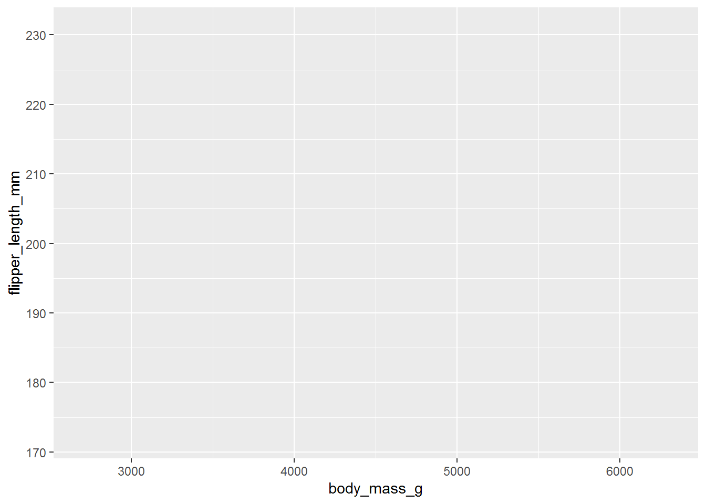
Ako môžete vidieť, špecifikáciu konkrétnych dát, ktoré chceme použiť, nastavíme pomocou mapping argumentu a aes (aesthetics) funkcie v ňom.
4.5.3 Špecifikácia zobrazenia dát
V ďalšom kroku si vyberieme, ako chceme naše dáta zobraziť. Možností je naozaj veľmi veľa, v tomto prípade si však vyberieme bodový graf.
ggplot(data = penguins_df,
mapping = aes(x = body_mass_g,
y = flipper_length_mm)) +
geom_point()## Warning: Removed 2 rows containing missing values (geom_point).
geom_point funkcia nám zobrazí reprezentáciu dát prostredníctvom bodov definovaných x a y súradnicou. Ďalšie funkcie, ktoré upravujú graf pridávame znamienkom + (nie cez %>%).
ggplot takisto zobrazuje varovanie, že dva body boli z grafu odstránené, lebo obsahujú missing values.
4.5.4 Pridanie tretej dimenzie
Okrem toho, že chceme vidieť vzťah medzi hmotnosťou a dĺžkou krídel by nás mohlo zaujímať aj porovnanie jednotlivých druhov tučniakov. Do grafu teda potrebujeme pridať tretiu dimenziu.
ggplot(data = penguins_df,
mapping = aes(x = body_mass_g,
y = flipper_length_mm,
color = species)) +
geom_point()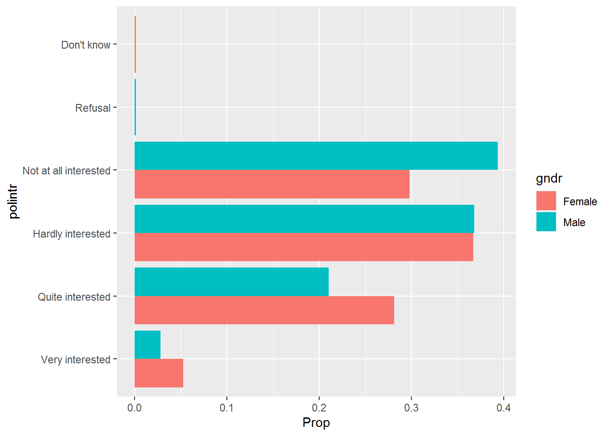
Argument color v aes funkcií nám definuje farbu jednotlivých bodov na základe kategorickej premennej. Zároveň vytvorí v grafe legendu.
4.5.5 Úprava prvkov v aes funkcii
Každý prvok v aesthetics je možné upraviť (scale). Využívajú sa na to funkcie, ktoré začínajú so slovom scale a potom pokračujú podľa druhu úpravy. Napríklad môže ísť o scale_color_manual.
ggplot(data = penguins_df,
mapping = aes(x = body_mass_g,
y = flipper_length_mm,
color = species)) +
geom_point() +
scale_color_manual(values = c("#E49C20", "#003669", "#E73230"))
4.5.6 Úprava textových prvkov grafu
v ggplote je samozrejme možné upraviť aj textové prvky grafu. Týmito môžu byť názov, zdroj, ale aj názvy osí. Toto je možné spraviť prostredníctvom labs funkcie.
ggplot(data = penguins_df,
mapping = aes(x = body_mass_g,
y = flipper_length_mm,
color = species)) +
geom_point() +
scale_color_manual(values = c("#E49C20", "#003669", "#E73230")) +
labs(
title = "Tučniaci, ich hmotnosť a krídla",
subtitle = "Pozitívny vzťah medzi hmotnosťou a veľkosťou krídel",
caption = "Dáta: Gorman, Williams & Fraser (2014)",
x = "Hmotnosť (g)",
y = "Dĺžka krídla (mm)",
color = "" # nešpecifikujeme názov legendy
)
4.5.7 Výber témy grafu
ggplot ponúka viacero preddefinovaných zobrazení grafu. Tieto sú uložené ako témy (themes), ktoré môžete kedykoľvek použiť. Samozrejme je možné si tému aj vytvoriť a používať ju v budúcnosti. V tomto prípade vyberieme tému theme_minimal.
ggplot(data = penguins_df,
mapping = aes(x = body_mass_g,
y = flipper_length_mm,
color = species)) +
geom_point() +
scale_color_manual(values = c("#E49C20", "#003669", "#E73230")) +
labs(
title = "Tučniaci, ich hmotnosť a krídla",
subtitle = "Pozitívny vzťah medzi hmotnosťou a veľkosťou krídel",
caption = "Dáta: Gorman, Williams & Fraser (2014)",
x = "Hmotnosť (g)",
y = "Dĺžka krídla (mm)",
color = ""
) +
theme_minimal()
4.5.8 Exportovanie grafu
Graf je možné exportovať pomocou funkcie ggsave, kde zároveň môžete definovať, jeho rozlíšenie (už žiadne rozrastrené grafy z plot karty v RStudio!), rozmery, ako aj formát súboru. Defaultne ggsave ukladá posledný vytvorený graf, ale cez argumenty viete určiť, ktorý graf má byť exportovaný tak, že si ho najprv uložíte do R objektu. Ak nedefinujete presnú cestu, tak je graf uložený do Vášho working directory.
my_plot <- ggplot(data = penguins_df,
mapping = aes(x = body_mass_g,
y = flipper_length_mm)) +
geom_point()
ggsave(my_plot, filename = "my_plot.png", dpi = 320, width = 14, height = 12, units = "cm")4.6 Rôzne typy grafov v ggplote zobrazujúce množstvá
Táto sekcia je venovaná ukážkam tvorby základných grafov pre množstvá a frekvencie. Pozrieme sa na to, ako vytvoriť stĺpcové, bodové, čiarové grafy, ako aj boxploty a histogramy. Okrem toho, že Vám ukážeme ako sa tieto grafy dajú vytvoriť, sa budeme snažiť poukázať na najčastejšie problémy, na ktoré užívatelia narážajú.
4.6.1 Stĺpcový graf
Stĺpcové grafy sa využívajú hlavne pre vizualizáciu kategorických dát. Predtým ako začneme tvoriť grafy si pripravíme dáta. Zmeníme textové premenné na faktory, aby ggplot poznal poradie jednotlivých hodnôt. Ak sa nám poradie po tejto zmene nepáči, môžeme ho zmeniť, tak ako sme si ukazovali v úvodných lekciách.
ess_sk <- ess_sk %>%
mutate(
gndr = factor(gndr, labels = c("Female", "Male")),
polintr = factor(polintr, labels = c("Very interested", "Quite interested", "Hardly interested", "Not at all interested", "No answer"), ordered = TRUE)
)Stĺpcové grafy je možné v ggplote vytvoriť pomocou dvoch funkcií: geom_bar a geom_col. Rozdiel medzi týmito dvoma funkciami je dobre popísaný v dokumentácii pre ggplot: “geom_bar() makes the height of the bar proportional to the number of cases in each group (or if the weight aesthetic is supplied, the sum of the weights). If you want the heights of the bars to represent values in the data, use geom_col() instead. geom_bar() uses stat_count() by default: it counts the number of cases at each x position.geom_col() uses stat_identity(): it leaves the data as is.”
V našom prípade budeme pre ukážky používať geom_bar
ggplot(ess_sk, aes(polintr)) + ## argumenty netreba menovať
geom_bar()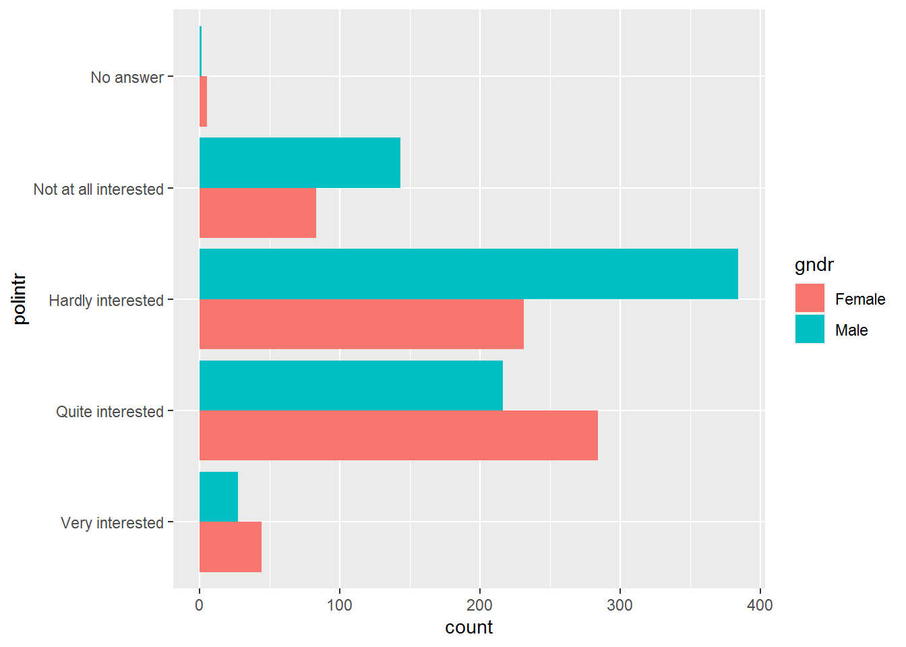
Môžeme použiť fill argument na zapracovanie ďalšej premennej do nášho grafu. Pozrime sa, ako sú tieto kategórie ďalej delené na základe rodu. Defaultne dostávame skladaný stĺpcový graf.
ggplot(ess_sk, aes(polintr, fill = gndr)) +
geom_bar()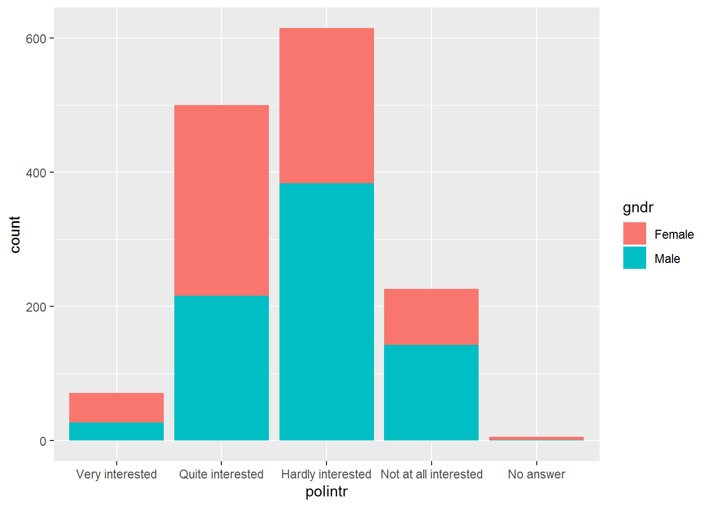
Na zmenu typu stĺpcového grafu môžeme využiť position argument v geom_bar funkcii. Zároveň si môžeme ukázať aj ďalší trik, ktorý spraví náš graf čitateľnejším - coord_flip.
ggplot(ess_sk, aes(polintr, fill = gndr)) +
geom_bar(position = "dodge") +
coord_flip()
Stĺpce môžeme spraviť aj proporčnými za využitia argumentov y = ..prop.. a group. Os y bude tak upravená na zobrazovanie podieľov. ..prop.. je dočasná premenná, ktorá má pred a za názvom .. na to, aby sa nepomýlila s prípadnou ozajstnou prop premennou.
ggplot(ess_sk, aes(polintr, fill = gndr)) +
geom_bar(position = "dodge", aes(y = ..prop.., group = gndr)) +
coord_flip()
Predošlý zápis Vám tak uľahčuje prácu, keď nemusíte dopočítavať premenné napríklad takto:
vypocet <- ess_sk %>%
group_by(gndr) %>%
mutate(Pocet = n()) %>%
ungroup() %>%
group_by(polintr, gndr) %>%
summarize(Prop = n()/first(Pocet))
ggplot(vypocet, aes(polintr, Prop, fill = gndr)) +
geom_col(position = "dodge") + #všimnite si zmenu geom
coord_flip()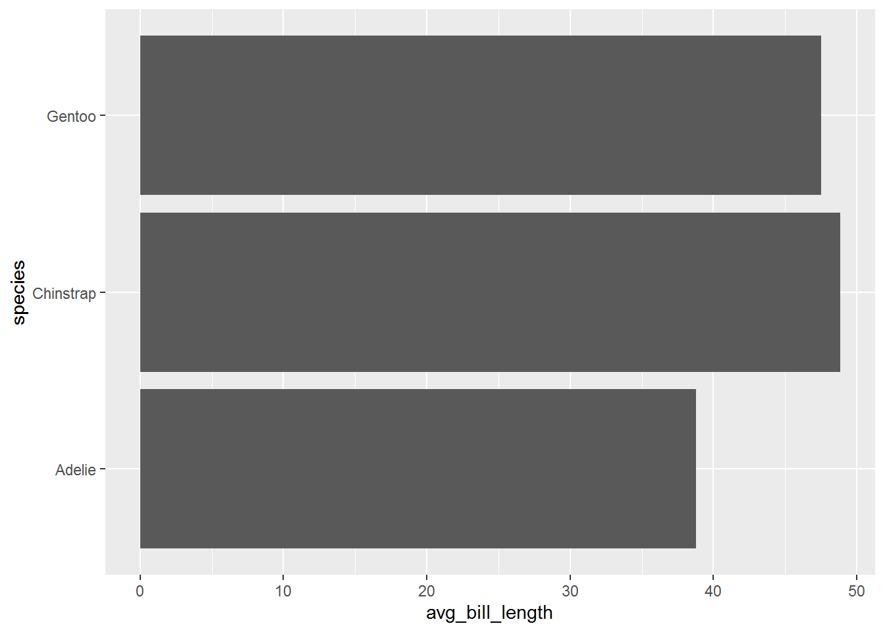
V stĺpcových grafoch je tiež možné kombinovať kategorické a priebehové premenné. Na to však treba upraviť dáta tak, aby nám dávali nejaké agregované hodnoty. Napríklad dopočítame priemernú dĺžku zobáka pre každý druh tučniakov v našom datasete:
penguins_mean <- penguins_df %>%
group_by(species) %>%
summarise(avg_bill_length = mean(bill_length_mm, na.rm = TRUE))
penguins_mean## # A tibble: 3 x 2
## species avg_bill_length
## <fct> <dbl>
## 1 Adelie 38.8
## 2 Chinstrap 48.8
## 3 Gentoo 47.5Tieto dáta následne použijeme na náš graf. Ako aj v predošlom príklade máme premennými definované obe dimenzie (x aj y). Jedným riešením je v tomto prípade použiť geom_col, ktorý počíta s dvom premennými. Môžeme však použiť aj argument v geom_bar, ktorým potlačíme defaultne nastavenie tejto funkcie. Argument stat len zmeníme na identity.
ggplot(penguins_mean, aes(x = species, y = avg_bill_length)) +
geom_bar(stat = "identity") +
coord_flip()
4.6.2 Bodové grafy zobrazujúce množstvá
Namiesto stĺpcových grafov je niekedy možné použiť bodové. Vyberme si z gapminder datasetu dáta z amerického svetadielu pre roky 1987 a 2007 a zobrazme si vývoj strednej dĺžky života v jednotlivých krajinách.
gapminder_americas <- gapminder_df %>%
filter(continent == "Americas", year %in% c(1987, 2007)) %>%
mutate(year = as.factor(year))
head(gapminder_americas)## # A tibble: 6 x 6
## country continent year lifeExp pop gdpPercap
## <fct> <fct> <fct> <dbl> <int> <dbl>
## 1 Argentina Americas 1987 70.8 31620918 9140.
## 2 Argentina Americas 2007 75.3 40301927 12779.
## 3 Bolivia Americas 1987 57.3 6156369 2754.
## 4 Bolivia Americas 2007 65.6 9119152 3822.
## 5 Brazil Americas 1987 65.2 142938076 7807.
## 6 Brazil Americas 2007 72.4 190010647 9066.ggplot(gapminder_americas, aes(lifeExp, reorder(country, lifeExp), color = year)) + #reorder argument nám zoradí krajiny podľa priemernej strednej dĺžky života za oba roky
geom_point()
Na zvýraznenie medziročných zmien môžeme body spojiť čiarou. Všimnite si, že sme museli posunúť color aesthetic do geom_point a použiť group = country v geom_line. Dôvodom tejto špecifikácie je, že geom_line by nemalo prevziať farby pre rok a že zároveň potrebuje definovať premennú, ktorá bude združovať dáta tak, aby čiara spojila dátove body v rámci krajiny. Takisto dbajte na to, aby geom_point bola v tomto prípade posledná funkcia v poradí, keďže ggplot vykresľuje jednotlivé vizualizácie v chronologickom poradí.
ggplot(gapminder_americas, aes(lifeExp, reorder(country, lifeExp))) +
geom_line(aes(group = country)) +
geom_point(aes(color = year)) +
labs(
x = "Stredná dĺžka života",
y = NULL,
color = NULL
) +
theme_minimal()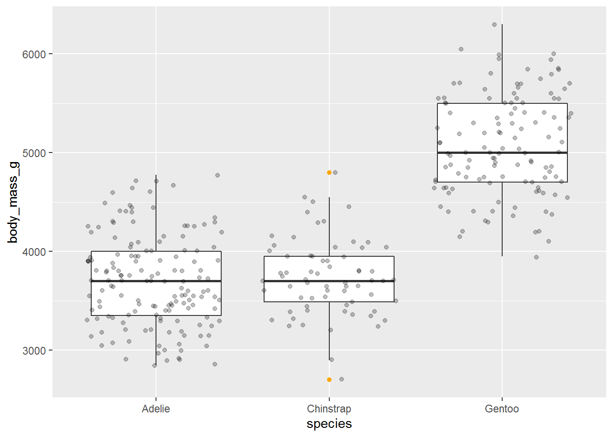
4.6.3 Histogram
Pokračujme s oboznamovaním sa s gapminder datasetom tým, že sa pozrieme na distribúcie niektorých premenných:
ggplot(gapminder_df, aes(x = lifeExp)) +
geom_histogram() 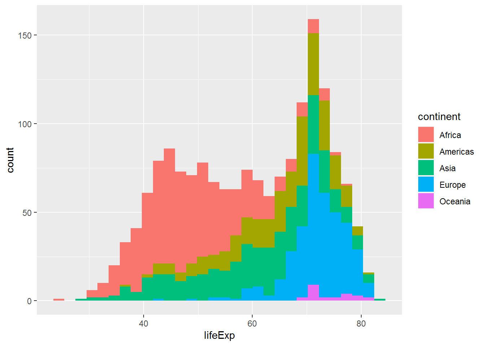
Na zvýraznenie grafu môžeme použiť color a fill argument v rámci geom_ funkcie. Aký myslíte, že je rozdiel medzi týmito dvoma argumentami?
Všimnite si, že sme zároveň prostredníctvom binwidth argumentu v geom_histogram funkcii zmenili šírku stĺpcov a teda aj intervaly rozdelenia skupín v rámci histogramu. Rozlíšenie histogramu sa nám tomu samozrejme prispôsobilo.
ggplot(gapminder_df, aes(x = lifeExp)) +
geom_histogram(binwidth = 1, color = "black", fill = "orange")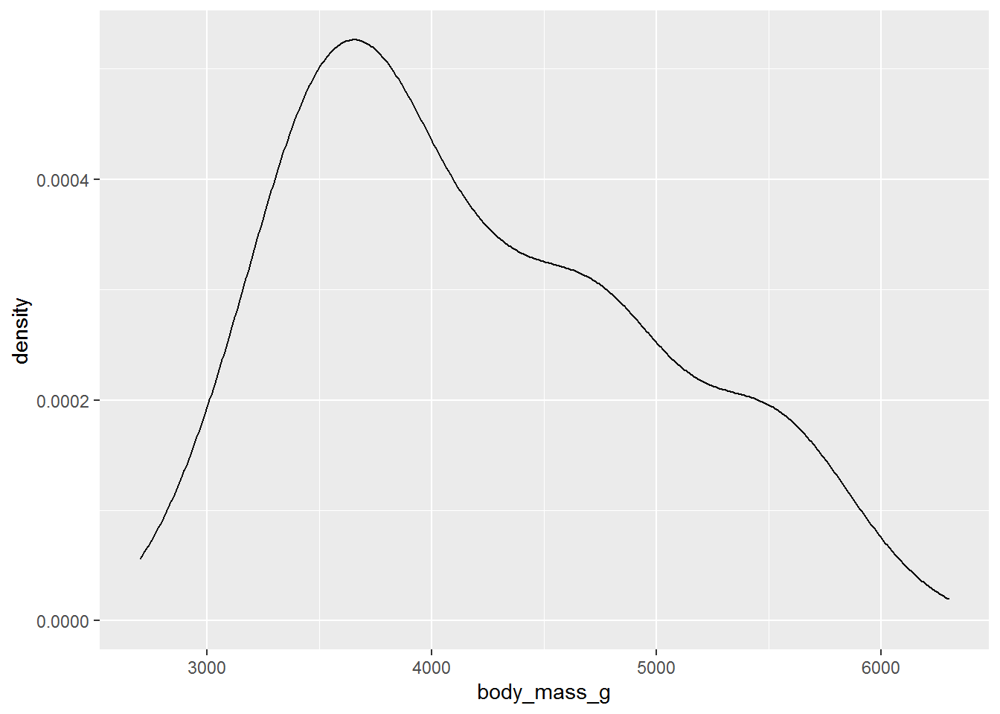
V jednom grafe je možné zobraziť aj histogramy pre rôzne skupiny. Pozrime sa na distribúciu pre jednotlivé svetadiely (kontinenty?) použitím fill argmuentu.
ggplot(gapminder_df, aes(x = lifeExp, fill = continent)) +
geom_histogram()
4.6.4 Density grafy (nepovinné)
Variácia pre histogramy môžu byť density grafy. Tie používajú Kernel vyrovnávanie krivky (čo znie fancy, ale funkcia v zásade používa vážené priemery susediacich dátových bodov)
ggplot(penguins_df, aes(x = body_mass_g)) +
geom_density()
Pridáme výplň v grafe.
ggplot(penguins_df, aes(x = body_mass_g)) +
geom_density(fill = "orange", alpha = 0.3)Myslíte si správne, aj density grafy vieme vykresliť tak, aby sa prekrývali. Takisto ako pri histograme na to použijeme fill aesthetic, čím dostaneme tri rôzne density krivky pre druhy tučniakov. Pre čitateľnosť grafu upravíme alpha argument tak, aby bola výplň priehľadnejšia.
ggplot(penguins_df, aes(x = body_mass_g, fill = species)) +
geom_density(alpha = 0.35, color = "white")
4.6.5 Ridgelines (nepovinné)
Tento typ grafu je dobre vyzerajúci a veľmi informatívny. Má podobnú funkciu ako prekrývajúce sa histogramy, avšak dáta prezentuje oveľa jasnejšie. Pre vytvorenie takéhoto grafu potrebujeme ggridges knižnicu, ktorá je rozšírením ggplot. Tento typ grafu je najužitočnejší, keď potrebujeme vizualizovať distribúcie v priebehu času alebo ak sa potrebujeme pozrieť na veľké množstvo distribúcií naraz. Pre ukážku použijeme airquality dataset, ktorý je súčasťou zabudovaných ukážkových datasetov.
airquality_df <- airquality %>%
mutate(
temp_c = (Temp - 30) / 2,
month = factor(Month, ordered = TRUE)
)
head(airquality_df)## Ozone Solar.R Wind Temp Month Day temp_c month
## 1 41 190 7.4 67 5 1 18.5 5
## 2 36 118 8.0 72 5 2 21.0 5
## 3 12 149 12.6 74 5 3 22.0 5
## 4 18 313 11.5 62 5 4 16.0 5
## 5 NA NA 14.3 56 5 5 13.0 5
## 6 28 NA 14.9 66 5 6 18.0 5ggplot(airquality_df, aes(x = temp_c, y = month, fill = month)) +
geom_density_ridges(scale = 0.8, alpha = 0.5)
4.6.6 Box plot
Box plot (krabicový graf) môže byť dobrý spôsob ako zobraziť Vaše distribúcie. Tento jednoduchý graf ukazuje veľa informácií o Vašich dátach. Samotný box obsahuje 50% hodnôt, čiary zobrazujú maximálnu a minimálnu hodnotu odhliadnuc od vzdialených pozorovaní. Čiara vnútri boxu označuje medián, horná a dolná hranica boxu predstavuje prvý a tretí kvartil. Samotný boxplot zároveň naznačuje, aký je rozptyl Vašich dát a či sú vychýlené do niektorej zo strán.
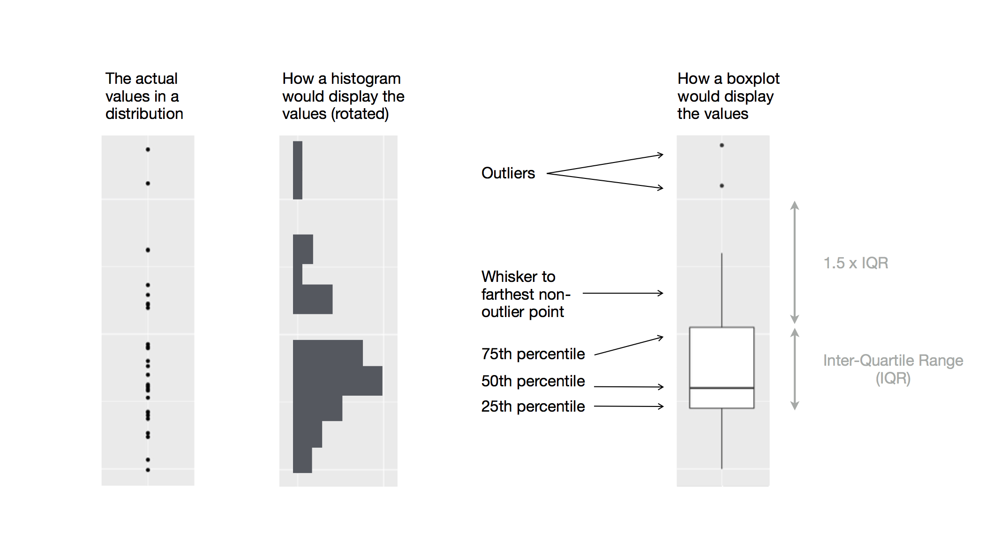
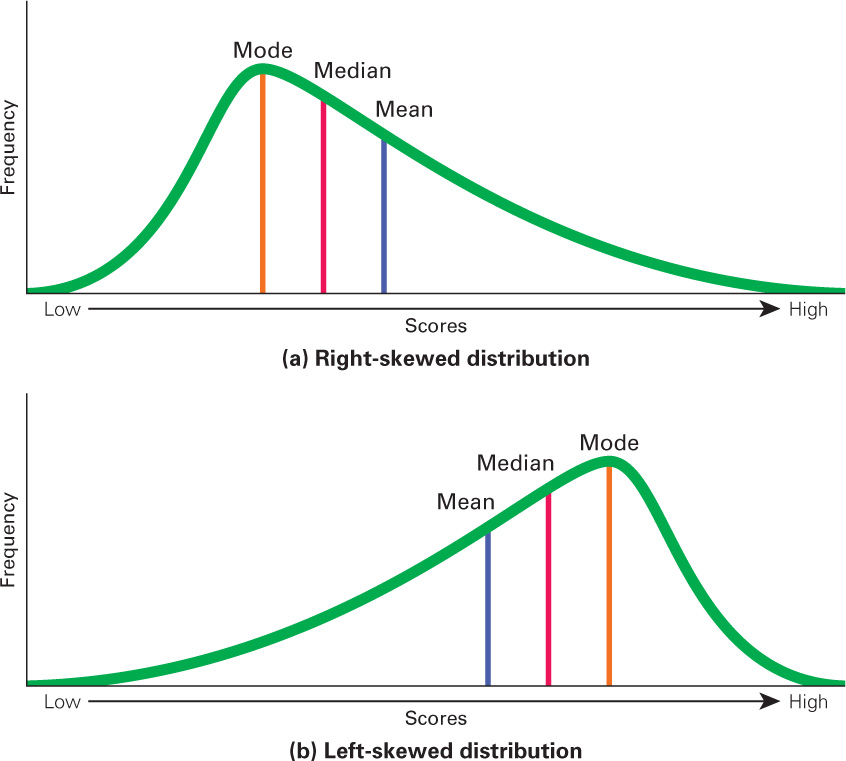
ggplot(penguins_df, aes(x = species, y = body_mass_g)) +
geom_boxplot()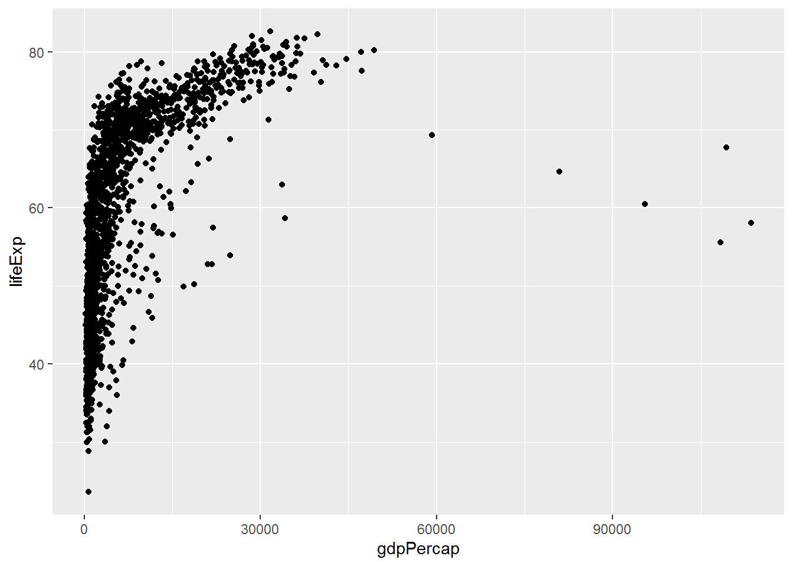
Box plot môžeme spraviť zaujímavejším zvýraznením vzdialených pozorovaní a pridaním pozícií jednotlivých hodnôt tým, že tiež použijeme geom_jitter.
ggplot(penguins_df, aes(x = species, y = body_mass_g)) +
geom_boxplot(outlier.color = "orange") +
geom_jitter(alpha = 0.25)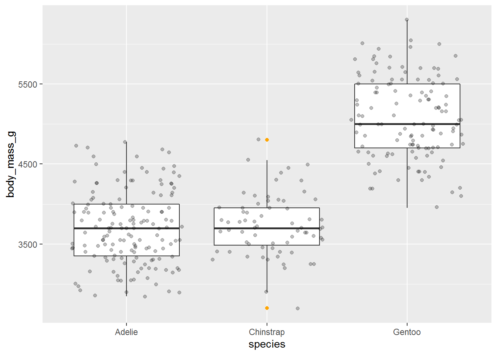
4.7 x~y vzťahy
Doteraz sme sa väčšinou zameriavali na zobrazovanie deskriptívnych informácií o dátach. V tejto časti prejdeme na vizualizáciu vzťahov medzi premennými.
4.7.1 Bodový vzťahový graf
V predošlých častiach sme už pracovali s bodovým grafom, ktorý však do istej miery nahrádzal stĺpcový pri zobrazovaní určitého “množstva”. V tejto časti sa ale budeme venovať bodovému grafu, ktorý znázorňuje vzťah medzi dvoma priebehovými premennými. Väčšinou zobrazujeme na y osi našu závislú premennú (premennú, ktorú sa snažíme vysvetliť) a na x osi zas nezávislú premennú, o ktorej si myslíme, že nejakým spôsobom ovplyvňuje tú závislú.
Pozrime sa na to, či existuje vzťah medzi HDP na obyvateľa a strednou dĺžkou života.
ggplot(gapminder_df, aes(gdpPercap, lifeExp)) +
geom_point()
Aký je problém s týmto grafom?
Keď už máme vytvorený základný graf, tak ho poďme upraviť tak, aby sme sa zbavili jeho chýb. Prvou vecou, ktorú môžeme urobiť je, že transformujeme hodnoty osi x prostredníctvom scale_x_log10. Zároveň môžeme pridať popisy grafu, ako aj oboch osí pomocou funkce labs. V rámci geom_point môžeme upraviť argumenty pre túto časť grafu ako napríklad alpha level. Takto sa zbavíme problému veľa bodov na jednom mieste, pričom logaritmická transformácia x osi nám vizuálne zlepší distribúciu dát.
ggplot(gapminder_df, aes(gdpPercap, lifeExp)) +
geom_point(alpha = 0.25) +
scale_x_log10() +
labs(
x = "HDP na obyvateľa",
y = "Stredná dĺžka života",
title = "Vzťah medzi HDP a strednou dĺžkou života",
subtitle = "Body zobrazujú krajinu v rámci jedného roku",
caption = "Zdroj: Gapminder"
)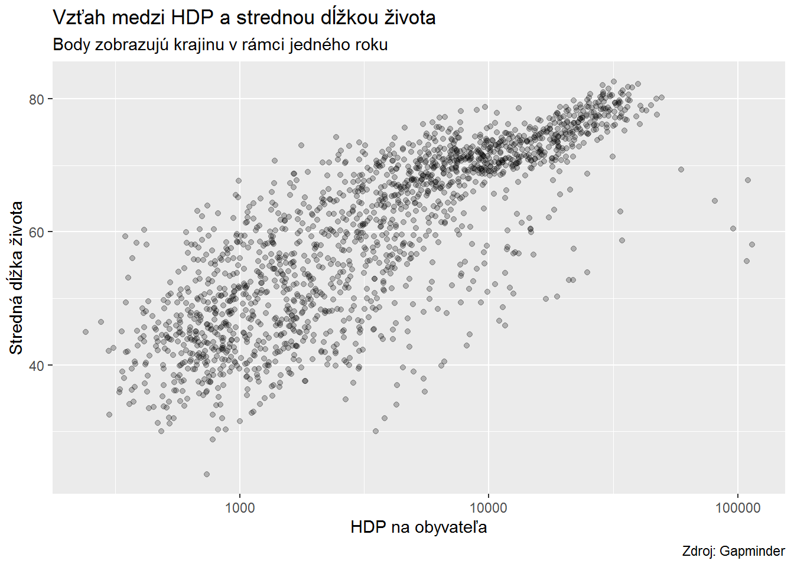
Na pridanie trochy analytických prvkov do tohto grafu môžeme použiť geom_smooth funkciu a vybrať metódu, na základe ktorej vykreslí trendovú čiaru. Môžeme si vybrať napríklad medzi lm, glm, gam, loess alebo rlm. V tomto prípade použijeme lineárny model (“lm”). Poznámka: Ide o čisto ukážkový príklad. Dátové body sú definované krajinou v roku, čiže “lm” nie je vhodný spôsob na vykreslenie regresnej priamky pre tieto dáta. Tento príklad zároveň ukazuje, ako sa dá vykresliť dva geoms v jednom grafe, čo si neskôr ukážeme aj na iných príkladoch.
ggplot(gapminder_df, aes(gdpPercap, lifeExp)) +
geom_point(alpha = 0.25) +
scale_x_log10() +
geom_smooth(method = "lm", se = TRUE, color = "orange") +
labs(
x = "HDP na obyvateľa",
y = "Stredná dĺžka života",
title = "Vzťah medzi HDP a strednou dĺžkou života",
subtitle = "Body zobrazujú krajinu v rámci jedného roku",
caption = "Zdroj: Gapminder"
)
Čo keď sa chceme pozrieť, ako sú na tom jednotlivé svetadiely, čo sa týka tohto vzťahu? Potrebujeme na to pridať v mappingu ďalší argument, ktorý nám zobrazí rozdelenie bodov podľa svetadielov. Týmto argumentom môže byť color. Teraz vidíme, že napríklad európske krajiny sa nachádzajú v pravom hornom rohu, čo znamená, že majú vysoké HDP na obyvateľa, ako aj vysokú strednú dĺžku života.
ggplot(gapminder_df, aes(gdpPercap, lifeExp, color = continent)) +
geom_point(alpha = 0.5) +
scale_x_log10() +
geom_smooth(method = "lm", se = TRUE, color = "black") +
labs(
x = "HDP na obyvateľa",
y = "Stredná dĺžka života",
title = "Spojitosť medzi HDP a strednou dĺžkou života",
subtitle = "Body zobrazujú krajinu v rámci jedného roku",
caption = "Zdroj: Gapminder"
)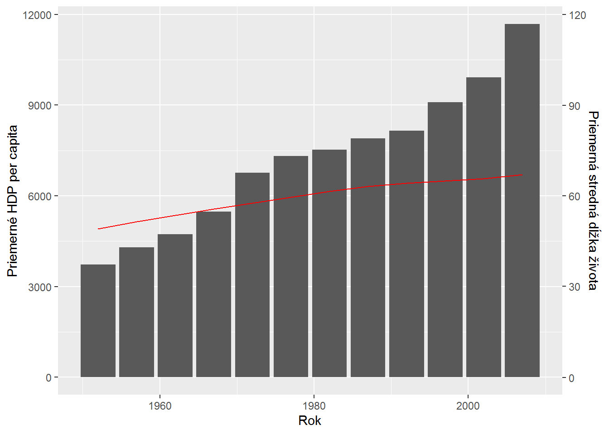
Na zobrazenie určitých hraníc v rámci dát vieme do bodového grafu tiež pridať vertikálnu a/alebo horizontálnu čiaru. Na ich pridanie použijeme funkcie geom_hline a geom_vline. V príklade nižšie vykreslíme horizontálnu a vertikálnu pre medián v jednom prípade a priemer v druhom. Podobne ako pri ostatných prvkoch grafu vieme typ čiary zmeniť prostredníctvom argumentu linetype. Čiara môže nadobúdať hodnoty blank, solid, dashed, dotted, dotdash, longdash, twodash.
ggplot(gapminder_df, aes(gdpPercap, lifeExp, color = continent)) +
geom_point(alpha = 0.5) +
geom_vline(xintercept = mean(gapminder_df$gdpPercap), linetype = "dashed") +
geom_hline(yintercept = median(gapminder_df$lifeExp), linetype = "dotted") +
scale_x_log10() +
labs(
x = "HDP na obyvateľa",
y = "Stredná dĺžka života",
title = "Spojitosť medzi HDP a strednou dĺžkou života",
subtitle = "Body zobrazujú krajinu v rámci jedného roku",
caption = "Zdroj: Gapminder"
)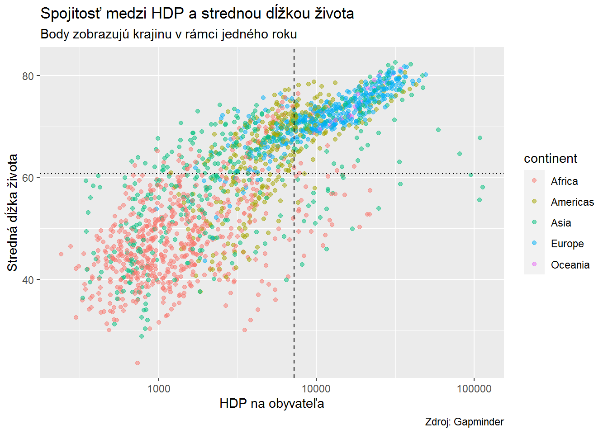
4.7.2 Bublinový graf (nepovinné)
Pre ukážku tohto grafu si vyfiltrujeme dáta len za rok 2002. Bublinový graf nám pridáva ďalšiu informáciu v podobe veľkosti jednotlivých bodov, ktorá môže naznačovať napríklad veľkosť populácie jednotlivých krajín. Pri takýchto grafoch si však treba dávať pozor, aby sme čitateľa (publikum) nezahltili s príliš veľa informáciami.
Kontrolovať maximálnu veľkosť bublín je možné prostredníctvom funkcie scale_size_area.
gapminder_df %>%
filter(year == 2002) %>%
ggplot(aes(gdpPercap, lifeExp, size = pop, color = continent)) +
geom_point(alpha = 0.8) +
scale_size_area(max_size = 15) +
scale_x_log10()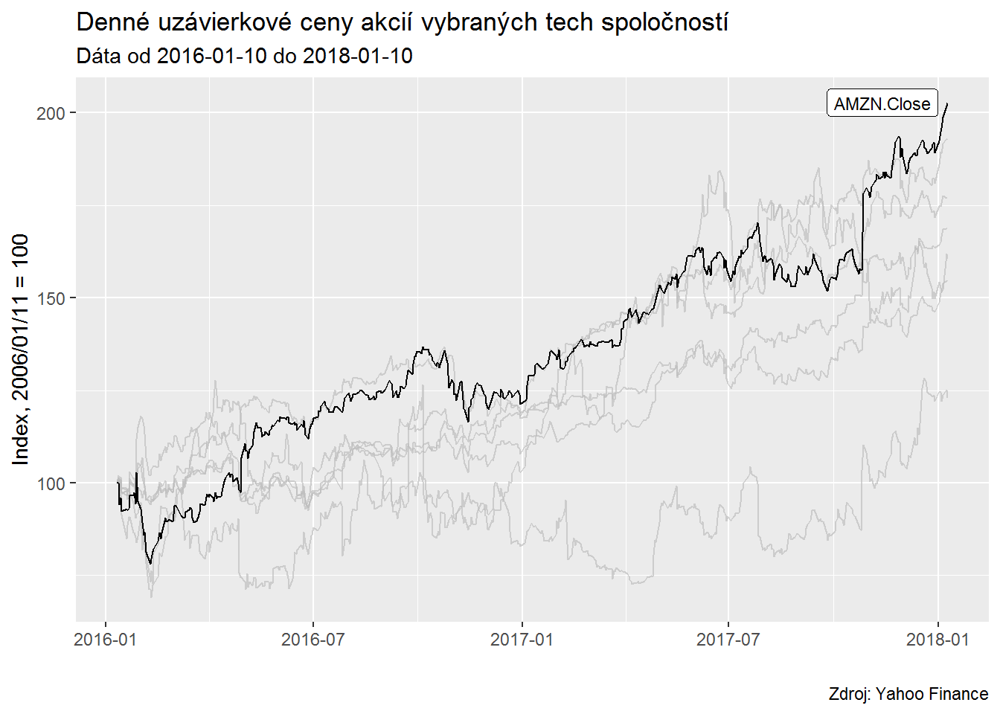
4.7.3 Čiarový graf
Čiarový graf pravdepodobne pozná každý z Vás. Pre ukážku tohto typu grafu použijeme hodnoty akcií pri uzávierkách. Ako ste si mohli všimnúť, keďže už sme oboznámení s ggplot syntaxom, tak nevypisujem názvy argumentov ako data = alebo mapping =. Tiež si všimnite, že v tomto prípade musíme definovať group argument na to, aby sme mali čiary vykreslené po spoločnostiach.
ggplot(stocks, aes(date, stock_index, group = company)) +
geom_line()
Poďme si tento graf trochu poupravovať. Jeden zo spôsobov ako zvýrazniť niektorú z čiar (napríklad $AMZN akcie) je použitie gghighlight knižnice, ktorá je užitočným rozšírením ggplotu.
ggplot(stocks, aes(date, stock_index, group = company)) +
geom_line() +
gghighlight(
company == "AMZN.Close",
use_direct_label = TRUE,
label_params = list(size = 3)
) +
labs(
x = "",
y = "Index, 2006/01/11 = 100",
title = "Denné uzávierkové ceny akcií vybraných tech spoločností",
subtitle = "Dáta od 2016-01-10 do 2018-01-10",
caption = "Zdroj: Yahoo Finance"
)
Rozdelenie grafu do malých grafov po kategóriách je výborný spôsob ako sprehľadniť niektoré vizualizácie. Na to, aby sme odstránili legendu z kraja použijeme argument guide = FALSE v scale_color_discrete a scale_fill_discrete funkcii. Na zvýraznenie trendov v našich dátach môžeme zároveň vyfarbiť oblasť pod krivkou prostredníctvom funkcie geom_area.
ggplot(stocks, aes(date, stock_index, color = company)) +
geom_line() +
geom_area(aes(fill = company), alpha = 0.6) +
scale_color_discrete(guide = FALSE) +
scale_fill_discrete(guide = FALSE) +
labs(
x = "",
y = "Index, 2006/01/11 = 100",
title = "Denné uzávierkové ceny akcií vybraných tech spoločností",
subtitle = "Dáta od 2016-01-10 do 2018-01-10",
caption = "Zdroj: Yahoo Finance"
) +
facet_wrap(~company, nrow = 4)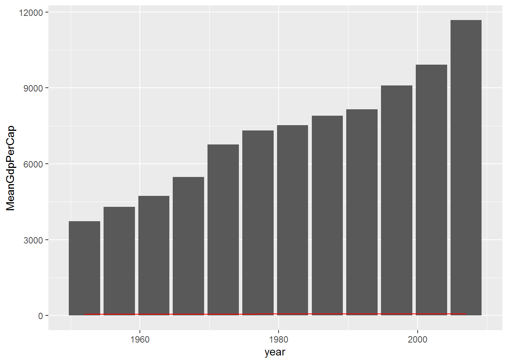
4.8 Spájanie grafov do jedného celku
4.8.1 Prekrývanie grafov
V predošlých príkladoch sme si ukázali zopár možností prekrývania sa grafov, ktoré však vychádzali len z pridania kategorickej premennej v rámci rovnakého grafu. Grafy však môžu byť skladané aj takým spôsobom, že napríklad stĺpce zobrazia počty a krivka sumárne hodnoty. V príklade nižšie sa pozrieme na vývoj priemerného HDP na obyvateľa z datasetu gapminder v stĺpcoch, pričom si krivkou zobrazíme vývoj priemernej strednej dĺžky života.
gapminder_agg <- gapminder_df %>%
group_by(year) %>%
summarize(MeanGdpPerCap = mean(gdpPercap, na.rm = T),
MeanlifeExp = mean(lifeExp, na.rm = T))ggplot(gapminder_agg, aes(year, MeanGdpPerCap)) +
geom_col(group = 1) +
geom_line(aes(year, MeanlifeExp), group = 1, color = "red")
Vidíme, že mierka y osi nie je správna. Máme v zásade dve možnosti, ako to napraviť. Prvou je vydelenie alebo vynásobenie jednej z premenných.
ggplot(gapminder_agg, aes(year, MeanGdpPerCap/100)) +
geom_col(group = 1) +
geom_line(aes(year, MeanlifeExp), group = 1, color = "red")
To už je lepšie.
4.8.1.1 Tvorba druhej y osi
Druhý spôsob ako to spraviť je pridať druhú y os. To vieme v tomto prípade urobiť prostredníctvom funckie scale_y_continuous a argumentu sec.axis v rámci nej. Pozrime sa na príklad:
ggplot(gapminder_agg, aes(year, MeanGdpPerCap)) +
geom_col(group = 1) +
geom_line(aes(year, MeanlifeExp), group = 1, color = "red") +
scale_y_continuous(sec.axis = sec_axis(~., name = "Priemerná stredná dĺžka života"))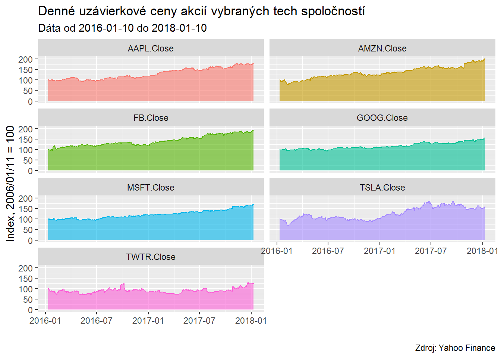
Ako vidíte, tak ggplot vytvorí druhú y os, ktorá je rovnaká ako tá prvá a neprispôsobuje sa mierkou tým dátam, ktoré chceme. Na to, aby to tak bolo, je treba sa pohrať s násobením a delením druhej y osi, ako aj premennej, ktorú má zobrazovať. V tomto prípade, ako sme videli vyššie, asi bude dobré mierku druhej y osi vydeliť 100. Na to, aby sa aj dáta dobre zobrazovali ich musíme zas vynásobiť 100.
ggplot(gapminder_agg, aes(year, MeanGdpPerCap)) +
geom_col(group = 1) +
geom_line(aes(year, MeanlifeExp*100), group = 1, color = "red") +
scale_y_continuous(sec.axis = sec_axis(~./100, name = "Priemerná stredná dĺžka života")) +
labs(
y = "Priemerné HDP na obyvateľa",
x = "Rok"
)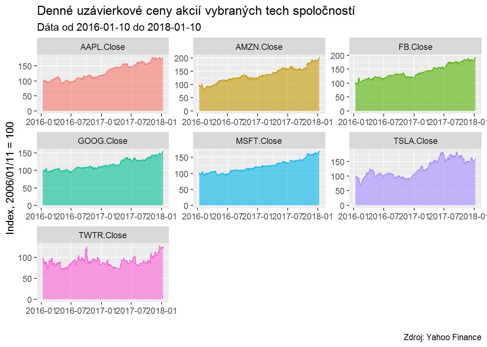
Týmto sa dostaneme k zobrazeniu, ktoré sme použili pri predošlej transformácii dát, avšak už máme zobrazenú aj druhú y os.
ggplot teda nevie prispôsobiť mierku druhej y osi Vašim dátam, túto úpravu musíte spraviť sami, pričom je fajn odraziť sa od pôvodnej y osi a snažiť sa jej prispôsobiť druhú y os tak, aby bol graf stále čitateľný a dával zmysel.
4.8.2 Pridávanie rovnakých grafov pre rôzne kategórie
Okrem pridávania prekrývajúcich sa grafov vieme vytvoriť rovnaký graf pre viaceré kategórie. Takýto graf je výborný, ak chceme niečo porovnávať. Na vytvorenie tohoto grafu použijeme funkcie facet_grid a facet_wrap. Začneme grafom, ktorý sme už vytvorili v predošlých častiach.
ggplot(stocks, aes(date, stock_index, color = company)) +
geom_line() +
geom_area(aes(fill = company), alpha = 0.6) +
scale_color_discrete(guide = FALSE) +
scale_fill_discrete(guide = FALSE) +
labs(
x = "",
y = "Index, 2006/01/11 = 100",
title = "Denné uzávierkové ceny akcií vybraných tech spoločností",
subtitle = "Dáta od 2016-01-10 do 2018-01-10",
caption = "Zdroj: Yahoo Finance"
) +
facet_wrap(~company, nrow = 4)
Rovnaké hodnoty na oboch osiach nám dávajú možnosť dobre porovnávať jednotlivé kategórie. Ak však chceme, aby sa mierka prispôsobila dátam v rámci kategórie, môžeme použiť argument scales vo funkcii facet_wrap. Možnosti, ktoré máme sú free, free_x, free_y.
ggplot(stocks, aes(date, stock_index, color = company)) +
geom_line() +
geom_area(aes(fill = company), alpha = 0.6) +
scale_color_discrete(guide = FALSE) +
scale_fill_discrete(guide = FALSE) +
labs(
x = "",
y = "Index, 2006/01/11 = 100",
title = "Denné uzávierkové ceny akcií vybraných tech spoločností",
subtitle = "Dáta od 2016-01-10 do 2018-01-10",
caption = "Zdroj: Yahoo Finance"
) +
facet_wrap(~company, ncol = 3, scales = "free") # zmenili sme aj počet stĺpcov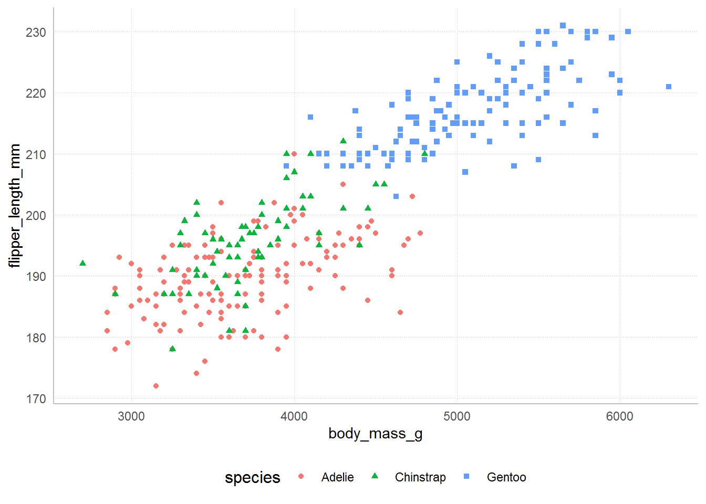
Okrem takýchto grafov sa dajú vytvoriť tie, ktoré budú v rade vedľa seba.
ggplot(stocks, aes(date, stock_index, color = company)) +
geom_line() +
geom_area(aes(fill = company), alpha = 0.6) +
scale_color_discrete(guide = FALSE) +
scale_fill_discrete(guide = FALSE) +
labs(
x = "",
y = "Index, 2006/01/11 = 100",
title = "Denné uzávierkové ceny akcií vybraných tech spoločností",
subtitle = "Dáta od 2016-01-10 do 2018-01-10",
caption = "Zdroj: Yahoo Finance"
) +
facet_grid(~company) +
theme(axis.text.x = element_text(angle = 90)) # otočíme text osi x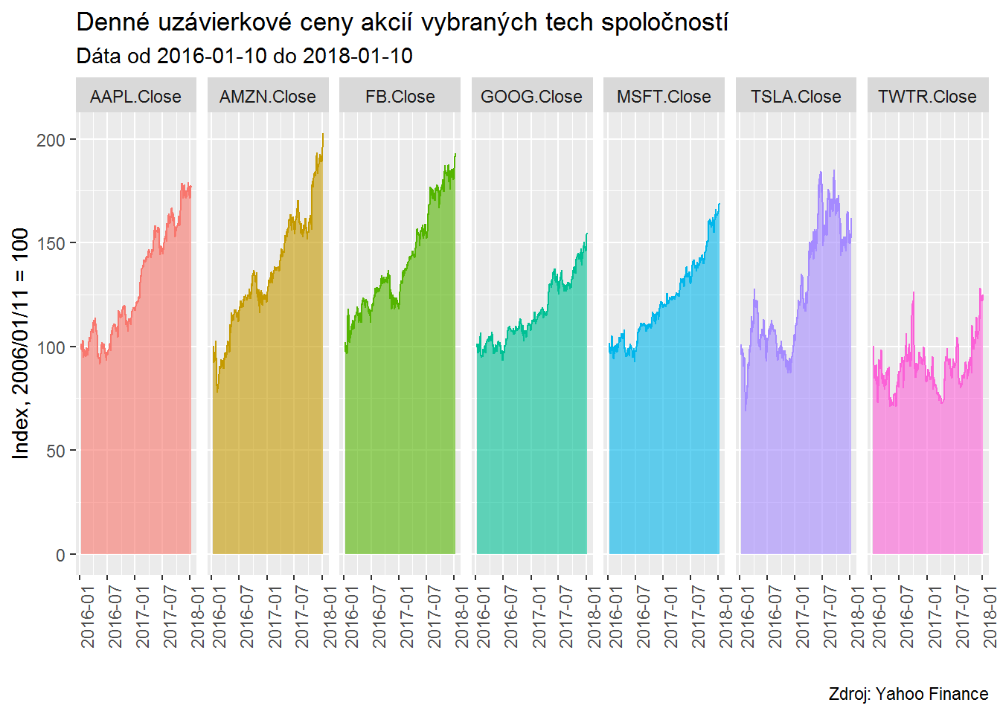
4.8.3 Pridávanie rôznych grafov do jedného
Poslednou možnosťou pridávania grafov do jedného je využiť patchwork knižnicu. Jej syntax je veľmi priamočiara, keďže používa jednoduché znaky ako +, /, |. Vytvorme si tri grafy a dajme ho do jedného.
p_scatter <- ggplot(penguins_df, aes(x = body_mass_g, y = flipper_length_mm, color = species)) +
geom_point() +
theme_minimal()
p_sina1 <- ggplot(penguins_df, aes(x = species, y = body_mass_g)) +
geom_sina(aes(color = species), alpha = 0.2) +
geom_violin(alpha = 0.25, fill = "grey") +
theme_minimal() +
theme(legend.position = "none")
p_sina2 <- ggplot(penguins_df, aes(x = species, y = flipper_length_mm)) +
geom_sina(aes(color = species), alpha = 0.2) +
geom_violin(alpha = 0.25, fill = "grey") +
theme_minimal() +
theme(legend.position = "none")Po vytvorení troch nezávislých grafov a ich definovaní do objektu si ich usporadajme tak, aby bol bodový graf na vrchu a zvyšné dva pod ním vedľa seba.
p_scatter / (p_sina1 | p_sina2)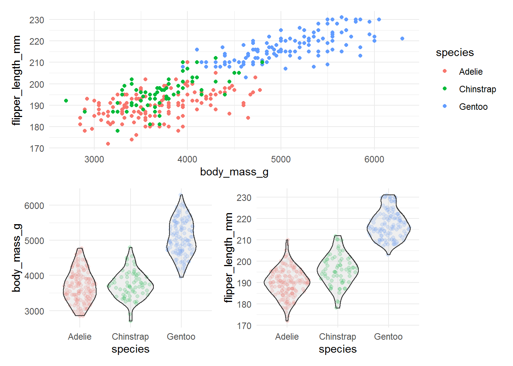
patchwork knižnica je veľmi flexibilná a jej dokumentácia vcelku prepracovaná. Ak potrebujete vytvoriť nezávislé grafy a dať ich do jedného, tak si pozrite, ako je možné ich usporiadať na stránke tejto knižnice: https://patchwork.data-imaginist.com/index.html
4.9 ggplot témy a formátovanie
V tomto bode by ste mali byť oboznámení s fungovaním ggplot a zároveň by ste mali vedieť vytvoriť rôzne druhy grafov. Avšak ggplot ponúka nespočetné množstvo funkcií, ktorými si viete upraviť to, ako Váš graf vyzerá. Okrem toho komunita vytvorila a stále vytvára niekoľko rozšírení, ktoré Vám vedia pomôcť pri partikulárnych problémoch.
4.9.1 Témy
V tejto časti si prejdeme niekoľko prvkov, ktoré v grafe viete upraviť, tak aby ste vytvorili dobre vyzerajúci graf. ggplot však ponúka niekoľko preddefinovaných tém, ktoré môžete využiť. Môžete si poskúšať témy, ktoré sú súčasťou ggplot knižnice, ale existujú aj iné, ktoré nájdete v ggthemes knižnici. V ggthemes nájdete aj témy, ktoré využívajú vo fivethirtyeight alebo Economiste. Zaujímavou knižnicou prinášajucou rôzne témy je hrbthemes. BBC okrem toho vytvorilo aj svoju vlastnú knižnicu, ktorú nájdete tu: https://github.com/bbc/bbplot.
Poskúšajte si viaceré a porovnajte si v čom sa líšia. Zmeniť tému, ako ste už mohli vidieť vyššie, vieme prostredníctvom theme_* funkcie.
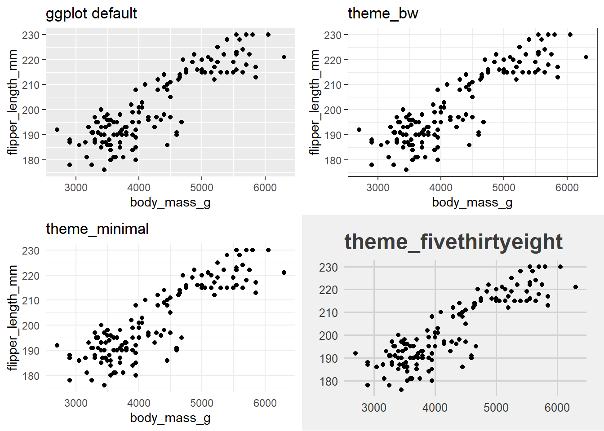
Mojou najoblúbeňejšou je theme_bw, ale výber záleží na Vás. Nakoniec si môžete akúkoľvek tému prispôsobiť alebo vytvoriť vlastnú, k čomu sa ešte dostaneme.
ggplot(gapminder_df, aes(x = gdpPercap, y = lifeExp)) +
geom_point(alpha = 0.25) +
scale_x_log10() +
theme_bw() # pridáme tému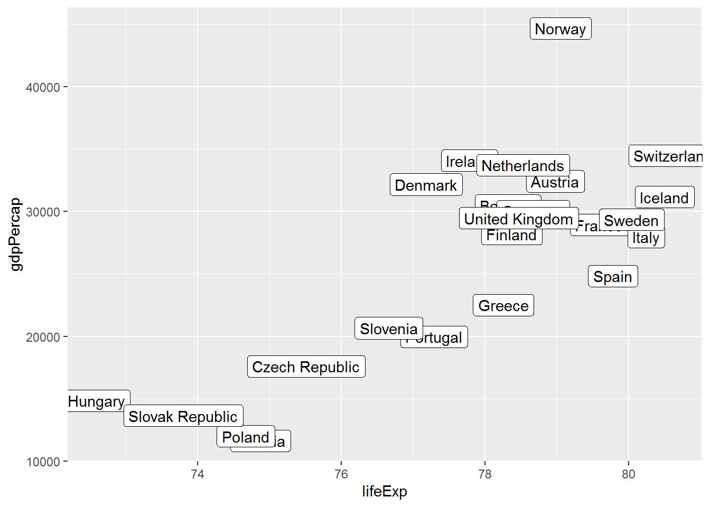
4.9.2 Prvky grafu a ich formátovanie
Ako bolo spomenuté vyššie, v ggplote viete upraviť pomaly každý prvok grafu.
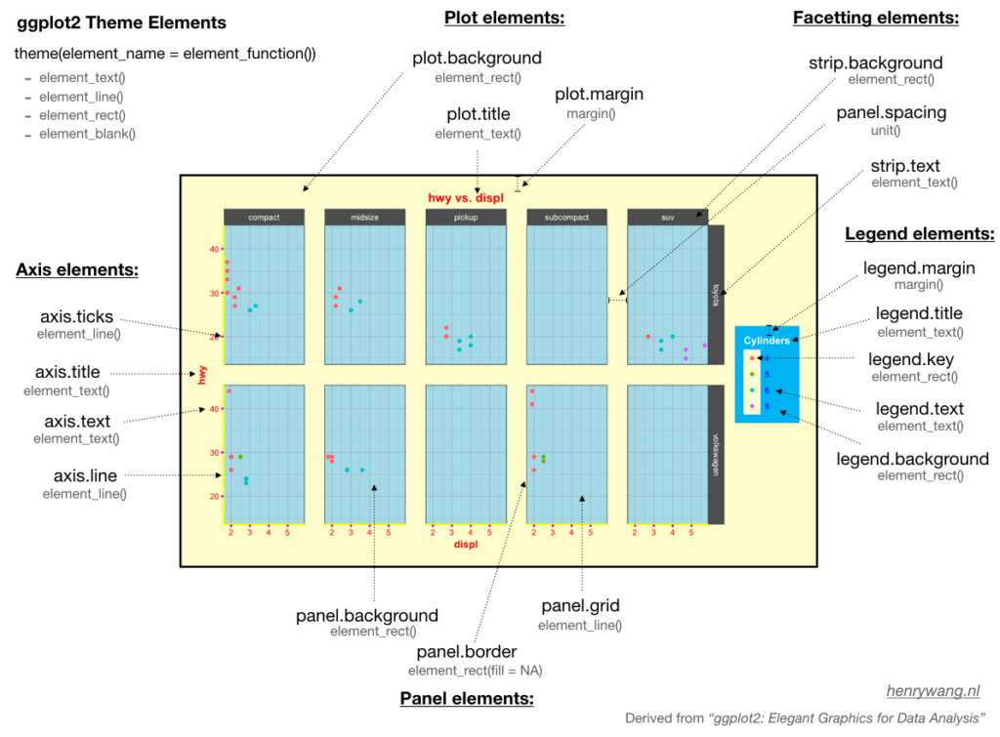
Kľúčovými prvkami grafu, na ktoré sa pozrieme sú (anglicky pre lepšiu orientáciu):
- labels
- grid lines
- fonts
- colors
- legend
- axis breaks
Pre ukážku použijeme graf, ktorý sme vytvorili na začiatku.
ggplot(penguins_df, aes(x = body_mass_g, y = flipper_length_mm, color = species)) +
geom_point()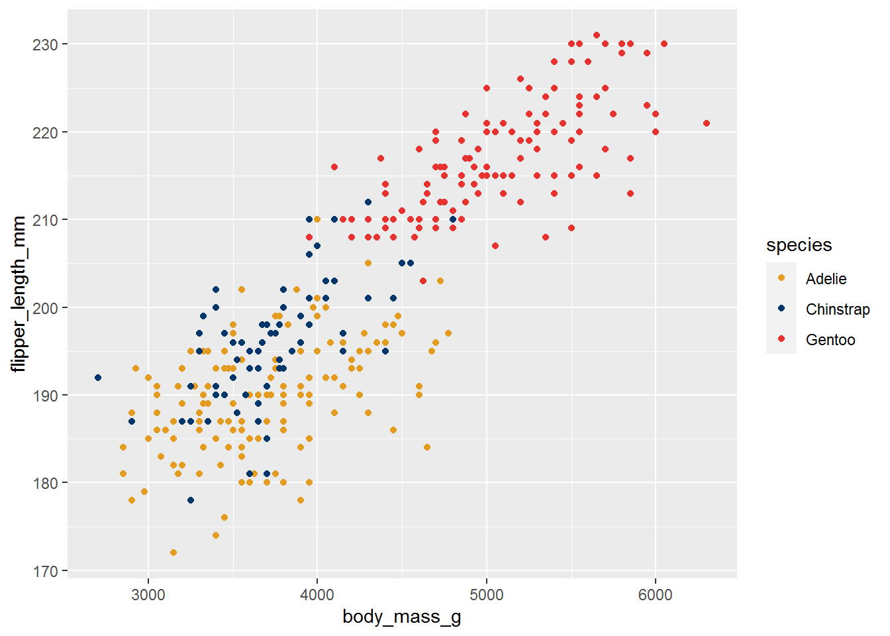
Pridajme inú farebnú škálu. Môžeme použiť “brewer scale”, ktorá je pre dátovú vizualizáciu často využívaná. Keď si chcete pozrieť rôzne farebné škály, tak navštívte: http://colorbrewer2.org. scale_color_brewer priamo pristupuje k paletám z colorbrewer2, čiže nemusíme všetko kopírovať zo stránky.
ggplot(penguins_df, aes(x = body_mass_g, y = flipper_length_mm, color = species)) +
geom_point() +
scale_color_brewer(name = "Species", palette = "Set2") # pridáme škálu z brewer scale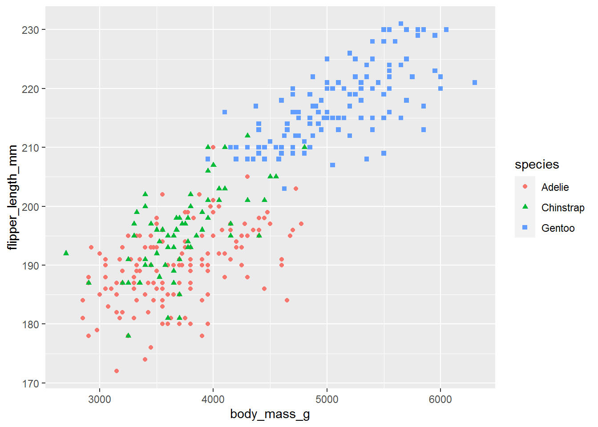
Tiež vieme definovať svoje vlastné farby cez funkciu scale_color_manual. Napríklad korporátne farby AC:
ggplot(penguins_df, aes(x = body_mass_g, y = flipper_length_mm, color = species)) +
geom_point() +
scale_color_manual(values=c("#E49C20", "#003669", "#E73230")) # pridanie vlastnej farebnej škály
Na jednoznačnejšie rozlíšenie jednotlivých kategórií vieme použiť rôzne tvary bodov:
ggplot(penguins_df, aes(x = body_mass_g, y = flipper_length_mm, color = species, shape = species)) +
geom_point()
Pre ilustráciu toho, ako viete upraviť graf sa pohráme v tomto príklade s viacerými nastaveniami. Ako prvé odstránime pozadie, nech dostaneme čistejší graf, ale zároveň ponecháme mriežku. Prostredníctvom argumentu axis.ticks v rámci funkcie theme odstránime tiež označenia čísel na osi (čiarky, ktoré z grafu vytŕčajú). Schovať alebo inak upraviť mriežku ide prostredníctvom theme funkcie, kde je možné použiť panel.grid.major alebo panel.grid.minor argumenty. Ak chcete upraviť mriežku len na jednej osi, tak treba použiť panel.grid.major.x alebo panel.grid.major.y (prípadne .minor alternatívy). V tomto prípade mriežke zmeníme farbu na šedú, zmenšíme ju a spravíme čiary bodkovanými. Os vieme modifikovať prostredníctvom element_line funkcie v argumente axis.line.
ggplot(penguins_df, aes(x = body_mass_g, y = flipper_length_mm, color = species, shape = species)) +
geom_point() +
theme(
panel.background = element_blank(), # odstráni pozadie
axis.ticks = element_blank(), # odstráni označenia osí (čiarky)
panel.grid.major = element_line(color = "grey", size = 0.1, linetype = "dotted"), # prefarbí a zmení typ čiar miežky
axis.line = element_line(colour = "grey") # zmení farbu osí
) 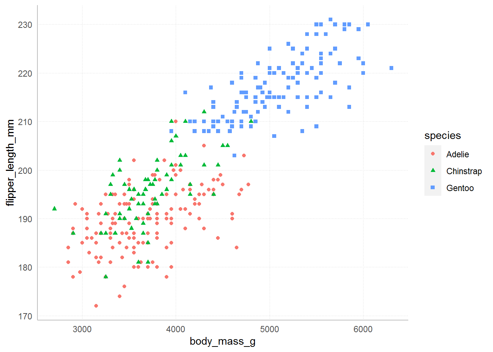
Nakoniec upravme legendu. Môžeme ju aj vymazať theme(legend.position="none") alebo v tomto prípade presunúť dole. Takisto nepotrebujeme pozadie legendy, čiže ho odstránime pomocou legend.key. Tiež sa môžeme pohrať s textovými prvkami prostredníctvom argumentu text.
ggplot(penguins_df, aes(x = body_mass_g, y = flipper_length_mm, color = species, shape = species)) +
geom_point() +
theme(
axis.ticks = element_blank(), # odstráni označenia osí (čiarky)
panel.grid.major = element_line(color = "grey", size = 0.1, linetype = "dotted"), # prefarbí a zmení typ čiar miežky
panel.background = element_blank(),
axis.line = element_line(colour = "grey"),
legend.title = element_text(size = 12), # nastaví veľkosť písma legendy
text = element_text(face = "plain", family = "sans"), # nastaví písmo v celom grafe
legend.key=element_blank(), # odstráni pozadie v legende
legend.position = "bottom" # zmení polohu legendy
)
Do finálnej verzie grafu pridáme vlastné farby, označenia a všetky úpravy, ktoré sme doteraz spravili.
ggplot(penguins_df, aes(x = body_mass_g, y = flipper_length_mm, color = species, shape = species)) +
geom_point() +
labs(
title = "Tučniaci, ich hmotnosť a krídla",
subtitle = "Pozitívny vzťah medzi hmotnosťou a veľkosťou krídel",
caption = "Dáta: Gorman, Williams & Fraser (2014)",
x = "Hmotnosť (g)",
y = "Dĺžka krídla (mm)",
color = "" # nešpecifikujeme názov legendy
) +
scale_color_manual(values = c("#E49C20", "#003669", "#E73230")) +
scale_shape(guide = FALSE) +
theme(
axis.ticks = element_blank(), # odstráni označenia osí (čiarky)
panel.grid.major = element_line(color = "grey", size = 0.1, linetype = "dotted"), # prefarbí a zmení typ čiar miežky
panel.background = element_blank(), # odstráni pozadie
axis.line = element_line(colour = "grey"), # zmení farbu osí
legend.title = element_text(size = 12), # # nastaví veľkosť písma legendy
text = element_text(face = "plain", family = "sans"), # nastaví písmo v celom grafe
legend.key=element_blank(), # odstráni pozadie v legende
legend.position = "bottom" # zmení polohu legendy
)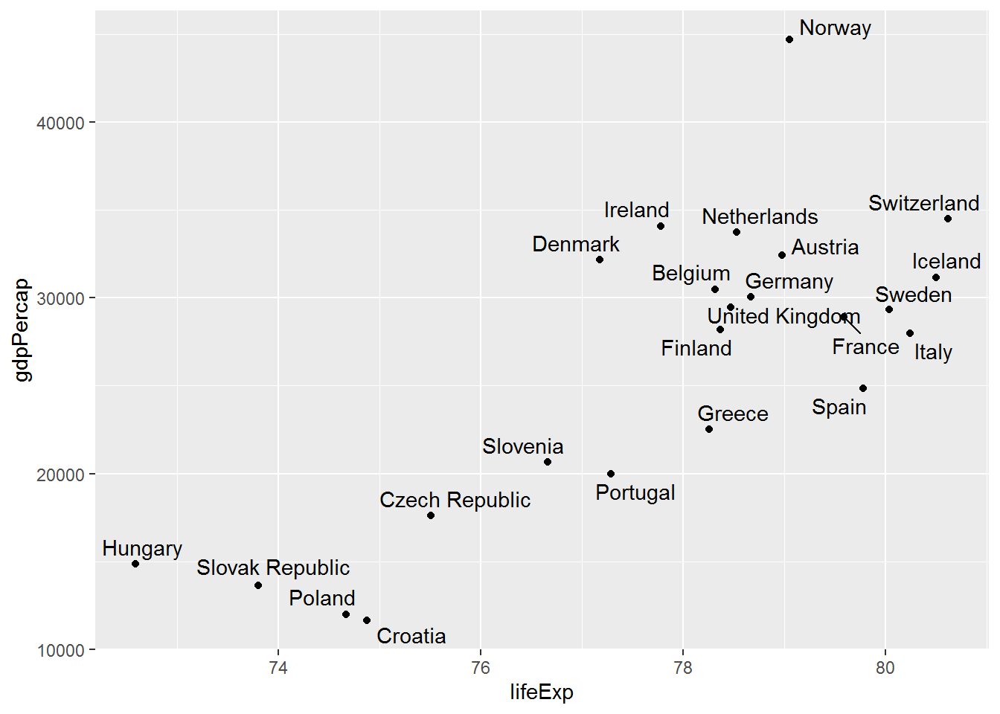
Pre ďalšie úpravy použijeme gapminder dataset. Dataset si správíme spracovateľnejší tým, že si vyfiltrujeme niektoré dáta.
Na označenie jednotlivých bodov v grafe vieme použiť geom_text funkciu.
gapminder_small <- gapminder_df %>%
filter(
lifeExp >= 72.5,
gdpPercap >= 10000,
continent == "Europe",
year == 2002
)
ggplot(gapminder_small, aes(lifeExp, gdpPercap, label = country)) + # pridáme označenia
geom_point() +
geom_text() # pridáme označenia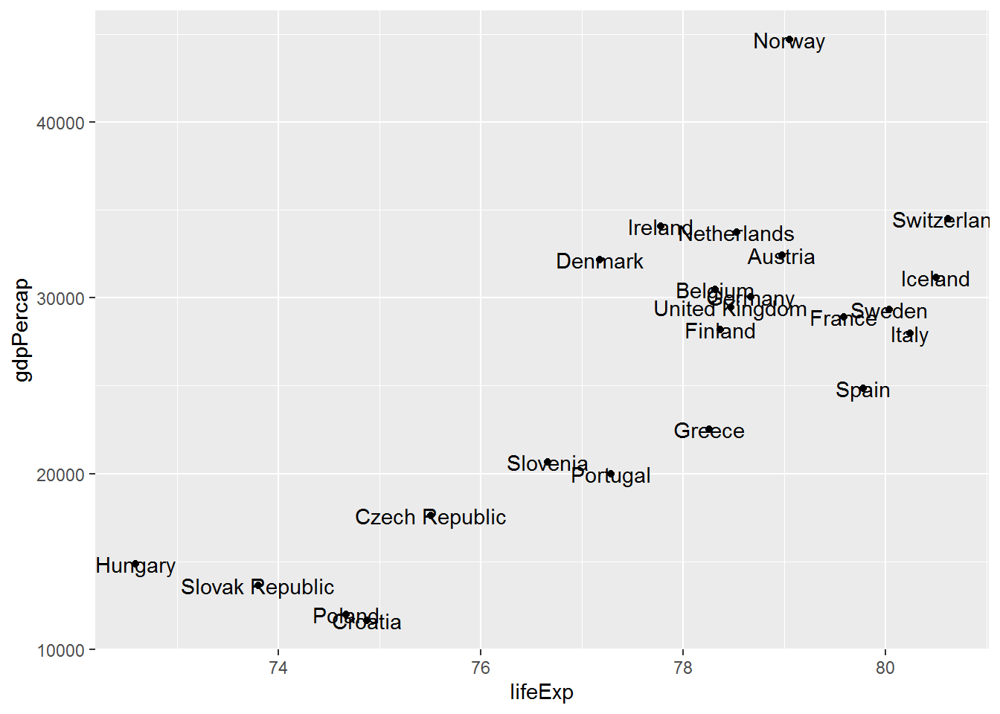
Vidíme, že sa nám označenia prelínajú. Na vyhnutie sa tomuto problému použijeme ggrepel knižnicu, v ktorej nájdeme funkcie geom_text_repel a geom_label_repel.
ggplot(gapminder_small, aes(lifeExp, gdpPercap, label = country)) +
geom_point() +
ggrepel::geom_text_repel()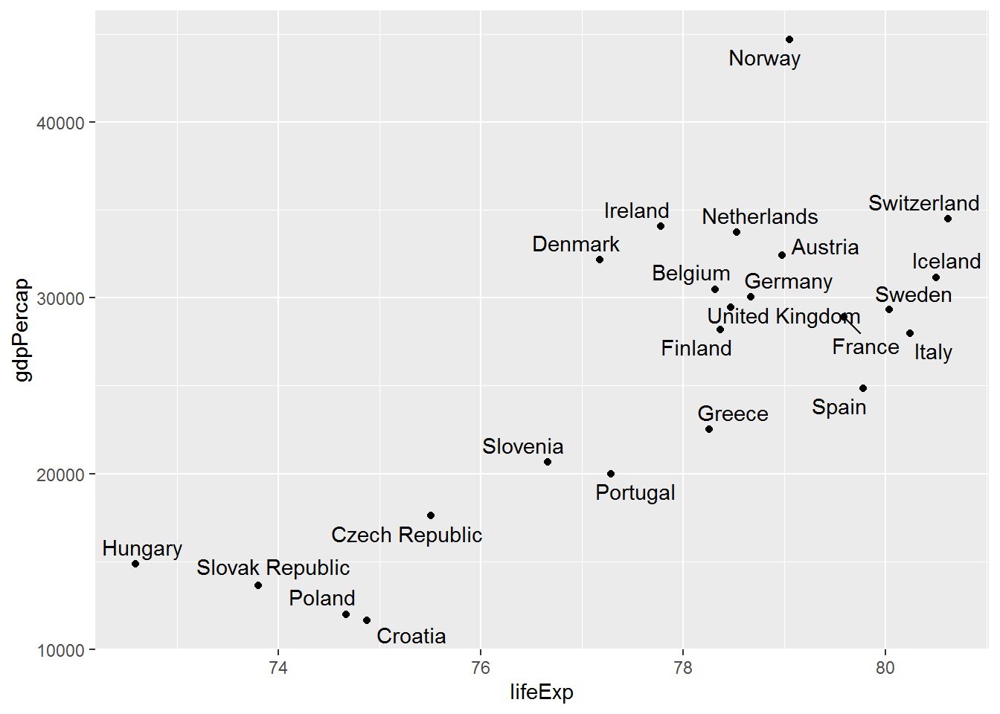
Všimnite si tiež rozdiel medzi geom_label a geom_text.
ggplot(gapminder_small, aes(lifeExp, gdpPercap, label = country)) + # pridáme označenia
geom_point() +
geom_label() # a použijeme geom_label
Ak potrebuje označiť len určitú časť bodov, tak to vieme spraviť v rámci ggplotu, bez potreby zmeny našich dát.
ggplot(gapminder_df, aes(gdpPercap, lifeExp, label = country)) + # pridáme označenia
geom_point(alpha = 0.25) +
geom_text(aes(label = if_else(gdpPercap > 60000, country, NULL))) # pridáme podmienku v rámci geom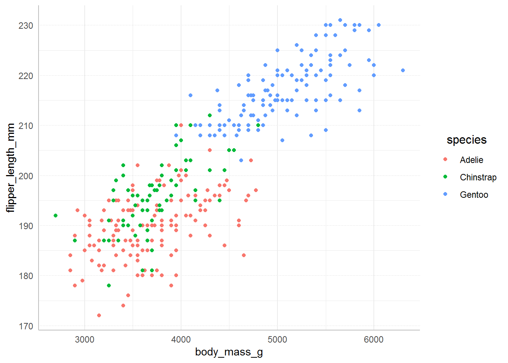
4.9.3 Vytvorenie témy
Vytvorenie si vlastnej témy pre ggplot je asi najviac dostupná možnosť ako si rozšíriť svoj ggplot. Najľahšia cesta, ako si spraviť vlastnú tému je použiť už existujúcu a upraviť ju. Pre tento účel použijeme theme_minimal a pridáme do nej zopár vecí, ktoré sme upravovali vyššie. Nazveme ju theme_custom. Nová téma je v zásade novou funkciou, ktorá používa pôvodnú tému a upravuje v nej jednotlivé prvky, ktoré zadefinujeme pomocou %+replace%.
theme_custom <- function() {
theme_minimal() %+replace%
theme(
panel.grid.major.y = element_line(color = "grey", size = 0.1, linetype = "dotted"),
panel.background = element_blank(),
axis.line = element_line(colour = "grey"),
legend.title = element_text(size = 12),
text = element_text(face = "plain", family = "sans"),
legend.key=element_blank()
)
}A teraz ju použime na dáta o tučniakoch.
ggplot(penguins_df, aes(x = body_mass_g, y = flipper_length_mm, color = species)) +
geom_point() +
theme_custom()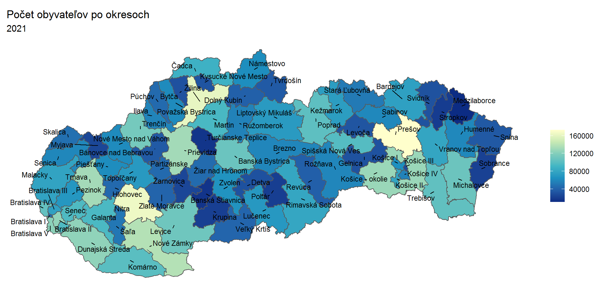
4.10 Mapy (nepovinné)
Dva dôležité prvky, ktoré nám vytvárajú mapu v rámci ggplot sú:
- Súbor so súradnicami, ktoré nám mapu vykresľujú
- Dáta, ktoré chceme v rámci mapy zobraziť
V prvom kroku ukážky si vytvoríme dataset pre mapy z knižnice maps.
world <- map_data("world")Vieme vykresliť prázdnu mapu.
ggplot(data = world,
mapping = aes(x = long, y = lat, group = group)) +
geom_polygon(fill = "white", color = "black") +
coord_cartesian()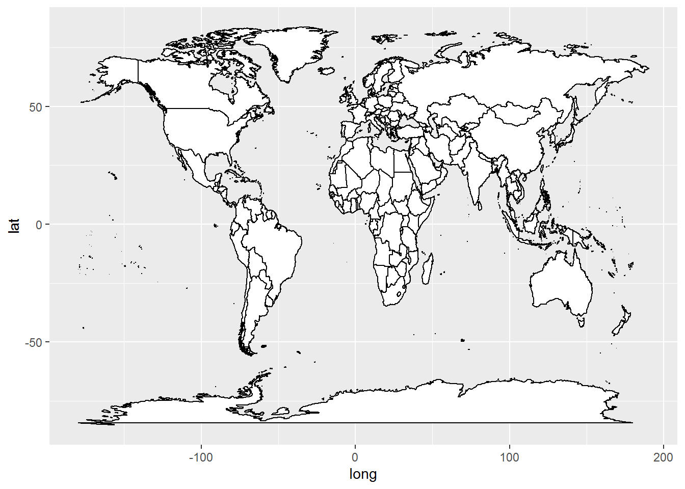
Takisto vieme z datasetu vybrať konkrétnu mapu, ktorá je podmnožinou. Je to možné presne tak, ako pri ostatných R objektoch.
# filtrovanie Slovenska
world_subset <- world %>%
filter(region == "Slovakia")
ggplot(data = world_subset,
mapping = aes(x = long, y = lat, group = group)) +
geom_polygon(fill = "white", color = "black") +
coord_quickmap()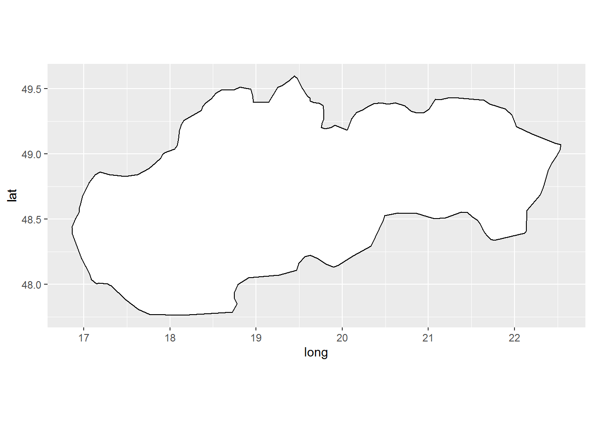
Teraz môžeme pridať dáta do našej mapy sveta. Z gapminder datasetu vyfiltrujeme len rok 2007. Zároveň pridáme stĺpec, ktorý bude dôležitý pre spojenie dvoch datasetov.
year_2007 <- gapminder %>%
filter(year == 2007) %>%
mutate(region = as.character(country)) # pridáme kľúčovú premennú pre spojenie datasetov
world_data <- left_join(world, year_2007, by = "region") # spojíme datasetyS takto pripravenými dátami môžeme prostredníctvom geom_polygon a coord_quickmap vytvoriť mapu s dátovými údajmi. Zároveň som spravil zopár úprav pre tému, aby mapa vyzerala dobre.
ggplot(world_data, aes(long, lat, group = group, fill = lifeExp)) +
geom_polygon(color = "gray90", size = 0.05 ) +
coord_quickmap() +
labs(
fill = "Stredná dĺžka života",
title = "Stredná dĺžka života po svete",
subtitle = "2007",
caption = "Dáta: Gapminder"
) +
scale_fill_viridis_c(na.value = "white", direction = -1) +
theme_bw() +
theme(
axis.line=element_blank(),
axis.text=element_blank(),
axis.ticks=element_blank(),
axis.title=element_blank(),
panel.background=element_blank(),
panel.border=element_blank(),
panel.grid=element_blank(),
panel.spacing=unit(0, "lines"),
plot.background=element_blank(),
legend.justification = c(0,0),
legend.position = c(0,0)
)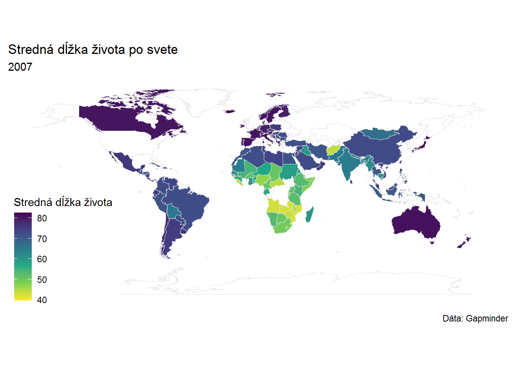
Pre geospatial analýzy existujú aj iné knižnice, ktoré pomáhajú so zobrazovaním dát v mapách prostredníctvom ggplot. Na záver si ukážeme príklad s mapou Slovenska rozdelenou na okresy a sfarbenou podľa počtu obyvateľov, ktorý okrem iného používa knižnicu sf. Táto časť je inšpirovaná prezentáciou, kde k tomuto typu analýz máte popísané viac:
- stránka: https://jan.povala.com/r-gis-slovakia/
- prezentácia: https://jan.povala.com/r-gis-slovakia/slides.html#/
- geo dáta: https://www.geoportal.sk/sk/zbgis/na-stiahnutie/
- pop dáta: http://datacube.statistics.sk/#!/view/sk/vbd_dem/om7102rr/v_om7102rr_00_00_00_sk
Najprv si načítame a upravíme dáta, ktoré budeme potrebovať. V prvom rade ide o dáta, ktoré nám vykreslia mapu. Na stránke spomínanej vyššie, nájdete dáta takéhoto druhu pre Slovensko. My budeme pracovať s úrovňou okresov. Na načítanie týchto dát budeme potrebovať knižnicu sf.
mapa.okres.sf <- st_read(dsn = "./data/ah_shp_0/okres_0.shp")## Reading layer `okres_0' from data source
## `C:\Users\mario.kajan\Desktop\Desktop\AC ORA\Vzdelávanie medzi AJ\Kurz\Kniha\data\ah_shp_0\okres_0.shp'
## using driver `ESRI Shapefile'
## Simple feature collection with 79 features and 20 fields
## Geometry type: POLYGON
## Dimension: XYZ
## Bounding box: xmin: -591311.3 ymin: -1334762 xmax: -165436.9 ymax: -1132697
## z_range: zmin: -0.00000000001455192 zmax: -0.00000000001455192
## Projected CRS: S-JTSK / Krovak East North + Baltic 1957 heightmapa.okres.sf <- mapa.okres.sf %>%
rename(okres = NM3) %>%
rename(okres_id = IDN3)Takisto si načítame a upravíme dáta počtu obyvateľov po okresoch zo Štatistického úradu, pričom načítame dáta prostredníctvom readxl a upravíme textový reťazec s pomocou knižnice stringr.
popDistrict <- read_xlsx("./data/obyvatelia.xlsx", 1) %>%
select(Area, `2021`) %>%
mutate(Area2 = str_remove(Area, "Okres ")) # odstránime slovo "Okres " z textového reťazca kvôli párovaniuOba datasety si spojíme cez názvy okresov.
ggplotmapa <- left_join(mapa.okres.sf, popDistrict,
by = c("okres" = "Area2"))Nakoniec použijeme ggplot na vytvorenie mapy. Na to potrebujeme geom_sf funkciu, do ktorej stačí len pridať argument fill. Tento nám sfarbí jednotlivé okresy podľa počtu obyvateľov. geom_sf tak nepotrebuje žiadne iné argumenty. Súradnice si berie automaticky z premennej geometry.
ggplot(ggplotmapa) +
geom_sf(aes(fill = `2021`)) +
scale_fill_distiller(palette = 16, direction = 1) +
theme_minimal()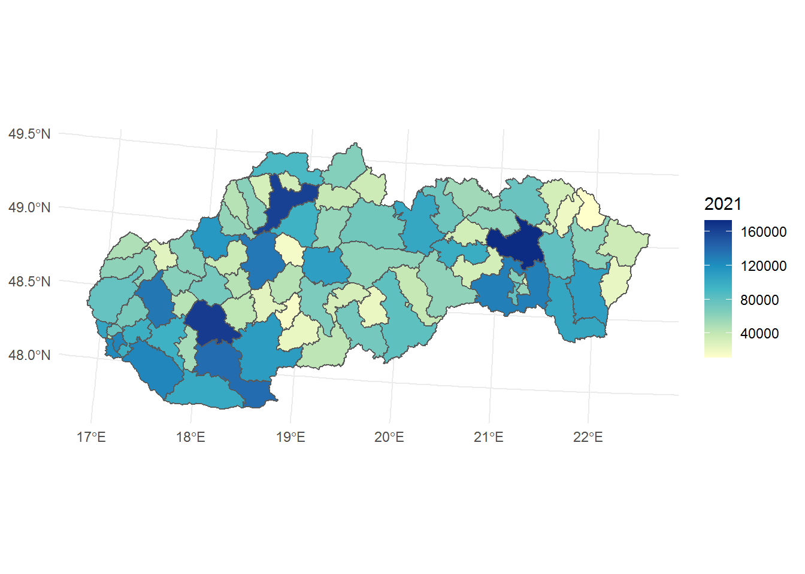
Mapu samozrejme vieme upraviť tak, aby vyzerala ešte lepšie.
ggplot(ggplotmapa) +
geom_sf(aes(fill = `2021`)) +
ggrepel::geom_text_repel(
aes(label = okres, geometry = geometry),
size = 3,
stat = "sf_coordinates",
min.segment.length = 0,
max.overlaps = 20,
colour = "black",
segment.colour = "black"
) +
scale_fill_distiller(NULL, palette = 16, direction = 1) +
labs(title = "Počet obyvateľov po okresoch",
subtitle = "2021") +
theme_minimal() +
theme(
axis.line=element_blank(),
axis.text=element_blank(),
axis.ticks=element_blank(),
axis.title=element_blank(),
panel.background=element_blank(),
panel.border=element_blank(),
panel.grid=element_blank()
)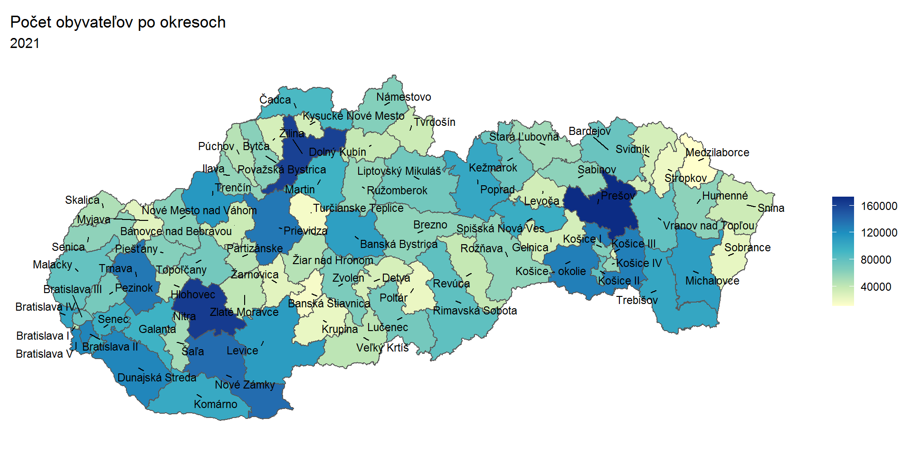
4.11 Cvičenia
Tak ako pri predošlej téme, v tejto časti nájdete zopár úloh, ktoré Vám pomôžu precvičiť si poznatky z tvorby grafov v ggplote. Riešenia znova nájdete pod otázkami a následne si ich môžeme prejsť aj na stretnutí. Na vypracovanie cvičení použite dataset sudy_2020-2021.xlsx, ktorý máte v priečinku data na drive a s ktorým sme už pracovali.
Poznámka : Samozrejme existuje viacero spôsobov, ako sa dostať k riešeniu, preto tie, ktoré sú uvedené pri otázkach, nie sú jediné správne.
Načítanie dát
library(openxlsx) #ak nemáte nainštalovnú, tak treba najprv nainštalovať prostredníctvom install.packages("openxlsx")
sudy <- read.xlsx("./data/sudy_2020-2021.xlsx", 1)
options(scipen = 999)1. Zobrazte vzťah medzi nápadom (Incoming) a rozhodnutými (Decided) vecami prostredníctvom bodového grafu. Odstránte z datasetu OS Banská Bystrica a vytvorte novú premennú Region2, v ktorej budú obvody krajských súdov (Region) rozdelené na západné (KS BA, KS TN, KS TT, KS NR), stredné (KS ZA, KS BB) a východné Slovensko (KS PO, KS KE). Uložte takto upravený dataset do nového objektu sudy_points. V ďalšom grafe pridajte do bodového grafu, vytvoreného predtým, tretiu dimenziu v podobe farby pre body na základe ich rozdelenia podľa premennej Region2. Pretransformujte osi tak, aby ukazovali hodnoty v logaritme 10. Pridajte názov grafu podľa vlastného uváženia, zmeňte názvy osí na slovenské ekvivalenty, odstránte názov legendy a zmente jej pozíciu tak, aby bola pod grafom. Použite tému podľa vlastného výberu.
Výsledok 1
ggplot(sudy, aes(Incoming, Decided)) +
geom_point()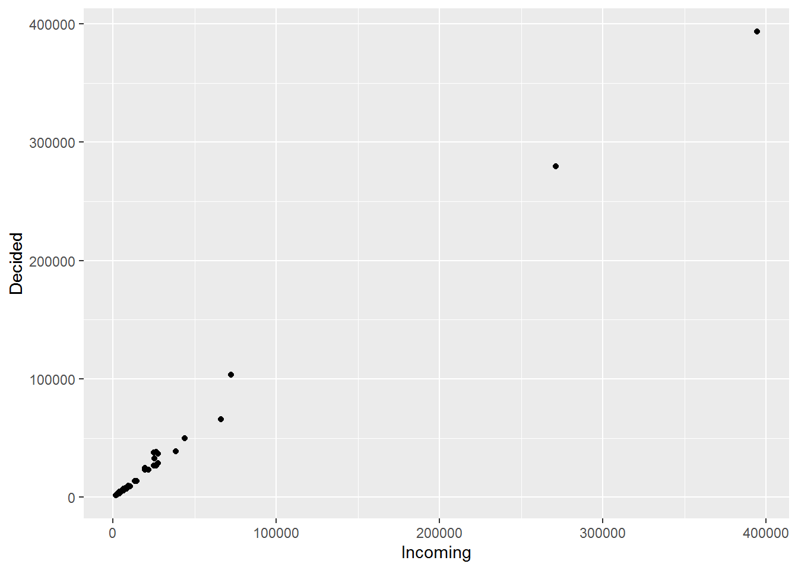
sudy_points <- sudy %>%
filter(Court != "OS Banská Bystrica") %>%
mutate(Region2 = case_when(
str_detect("^KS Bratislava$|^KS Trnava$|^KS Trenčín$|^KS Nitra$", Region) ~ "Západ",
str_detect("^KS Banská Bystrica$|^KS Žilina$", Region) ~ "Stred",
str_detect("^KS Košice$|^KS Prešov$", Region) ~ "Východ"))
ggplot(sudy_points, aes(Incoming, Decided, color = Region2)) +
geom_point() +
scale_x_log10() +
scale_y_log10() +
labs(title = "Vzťah nápadu a rozhodnutých vecí",
x = "Nápad (log10)",
y = "Rozhodnuté (log10)",
color = "") +
theme_bw() +
theme(legend.position = "bottom")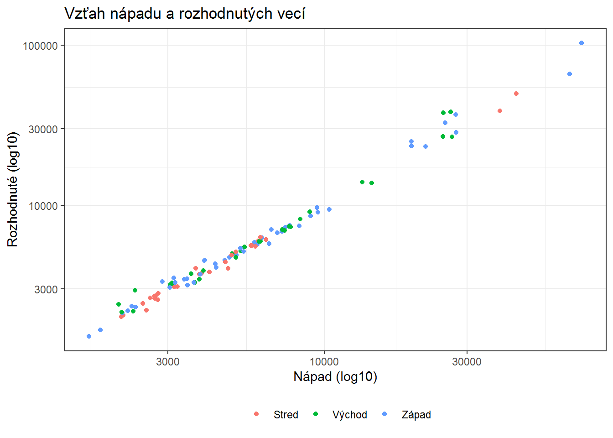
2. Vypočítajte priemer počtu sudcov (nJudges) v rámci jednotlivých obvodov KS a zároveň v rámci jednotlivých rokov (Year) a uložte nový dataset s premennými, obvod KS (Region), rok (Year) a priemer počtu sudcov (MeanNJudges) do objektu sudy_bars. Zobrazte stĺpcový graf tak, aby na y osi boli zobrazené jednotlivé obvody KS (Region) a sĺpce budú porovnávať priemerný počet sudcov v jednotlivých rokoch, pričom budú jednotlivé obvody KS zoradené zostupne podľa priemeru oboch rokov (hint: môžete použiť fct_reorder funkciu z forcats knižnice). Zmente názov grafu podľa Vášho uváženia, takisto zmente názvy jednotlivých osí a legendy na slovenské, zmente farbu stĺpcov na čiernu a šedú, použite tému theme_bw a odstránte v nej mriežku.
Výsledok 2
library(forcats)
sudy_bar <- sudy %>%
group_by(Region, Year) %>%
summarize(MeanNJudges = mean(nJudges)) %>%
ungroup() %>%
mutate(Region = fct_reorder(Region, MeanNJudges, mean))
ggplot(sudy_bar, aes(Region, MeanNJudges, fill = as.factor(Year))) +
geom_col(position = "dodge") +
scale_fill_manual(values = c("black", "lightgrey")) +
coord_flip() +
labs(
title = "Priemerný počet sudcov OS podľa obvodov KS",
x = "Obvod KS",
y = "Priemerný počet sudcov OS",
fill = "Rok"
) +
theme_bw() +
theme(panel.grid = element_blank())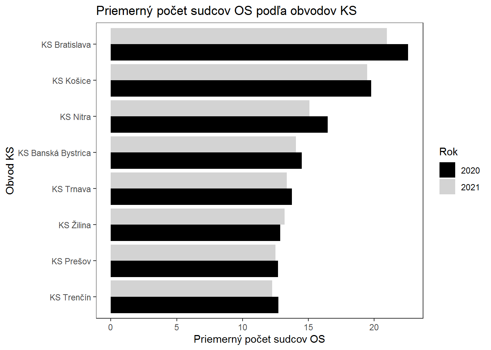
3. Vyfiltrujte dáta za rok 2021, spočítajte počet zamestnancov (Assistant + Judicial.officer + Secretary) v každom z pozorovaní v datasete sudy a uložte dataset s novou premennou do objektu sudy_boxplot. Vytvorte graf, v ktorom budú zobrazené boxploty za jednotlivé obvody KS (Region) samostatne. Vytvorte názov grafu a zmente názvy osí na slovenské. Odstránte mriežku v grafe, jednotlivé označenia hodnôt na osi (čiarky na čiare reprezentujúcej os), šedé pozadie grafu a zmente farbu x a y osi na šedú. Otočte názvy jednotlivých obvodov KS o 90 stupňov.
Výsledok 3
sudy_boxplot <- sudy %>%
filter(Year == "2021") %>%
mutate(nEmployees = Assistant + Secretary + Judicial.officer)
ggplot(sudy_boxplot, aes(Region, nEmployees)) +
geom_boxplot() +
labs(
title = "Rozdelenie hodnôt počtu zamestnancov jednotlivých OS po obvodoch KS",
x = "Obvod KS",
y = "Počet zamestnancov"
) +
theme(panel.background = element_blank(),
panel.grid = element_blank(),
axis.line = element_line(colour = "grey"),
axis.ticks = element_blank(),
axis.text.x = element_text(angle = 90, hjust = 1)
)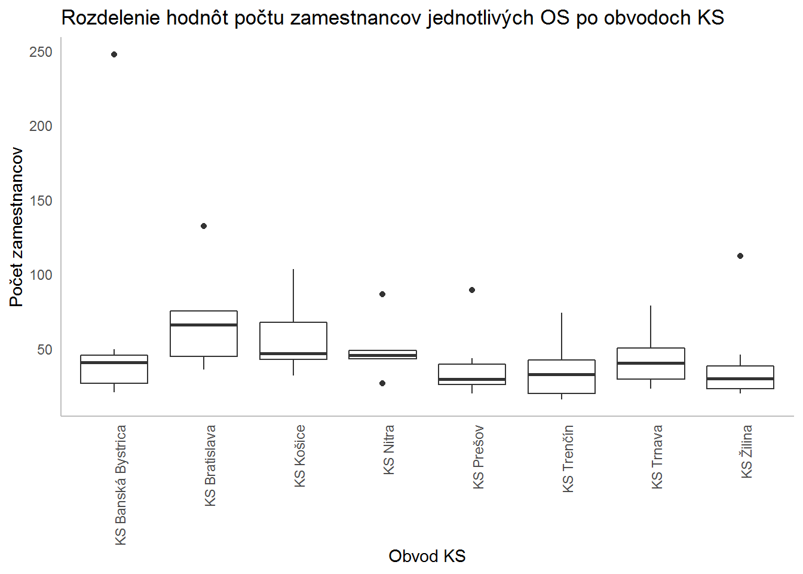
4. Za použitia všetkých pozorovaní z datasetu sudy vytvorte histogramy nerozhodnutých vecí (Pending) za jednotlivé obvody KS (Region). Vytvorte taký graf, ktorý bude zobrazovať každý obvod KS (Region) ako samostnatný graf, ktorý bude súčasťou jedného veľkého grafu zobrazujúceho všetky obvody KS (Region). Rozsah oboch osí nastavte tak, aby boli prispôsobené dátam v rámci obvodu KS (Region). Upravte graf podľa vlastnej preferencie tak, aby ste použili aspoň štyri argumenty pre tému, zmenili farbu stĺpcov (bez legendy) a zároveň zmenili aj názvy osí.
Výsledok 4
ggplot(sudy, aes(x = Pending)) +
geom_histogram(fill = "#E49C20", color = "black") +
facet_wrap(~Region, scales = "free") +
labs(
x = "Nerozhodnuté veci",
y = "Počet"
) +
theme(panel.background = element_blank(),
panel.grid = element_line(color = "lightgrey"),
strip.background = element_rect(fill = "#003669"),
strip.text = element_text(color = "white", face = "bold"))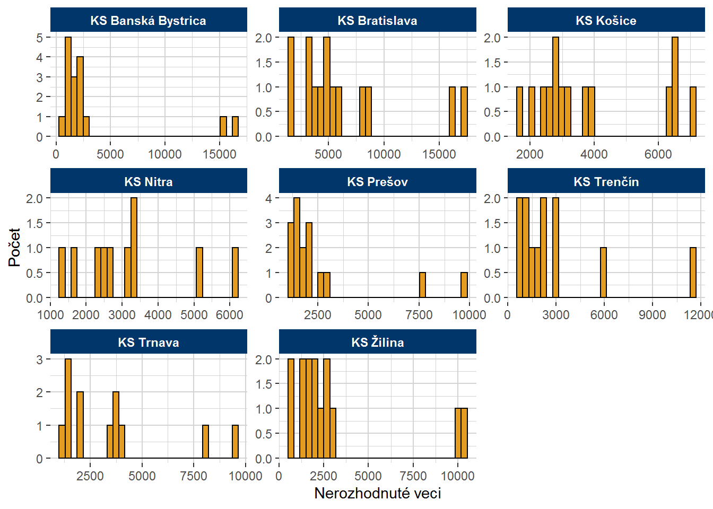
5. Prvým trom vytvoreným grafom (bodový, stĺpcový, boxplot) odstránte ich názvy, v boxplot grafe otočte hodnoty zobrazené na osiach (názvy súdov dajte na y os a počet zamestnancov na x, pričom zmente uhol textu osi x na defaultný) a uložte ich do samostatných objektov. Zobrazte ich všetky v jednom grafe tak, aby vo vrchnej časti boli stĺpcový a boxplot graf. V spodnej časti zobrazte len bodový graf. V druhom kroku zobrazte tieto grafy aj tak, aby boli v ľavej časti pod sebou stĺpcový a boxplot graf, pričom v pravej časti bude bodový graf.
Výsledok 5
##-----Bodový graf-----
sudy_points <- sudy %>%
filter(Court != "OS Banská Bystrica") %>%
mutate(Region2 = case_when(
str_detect("^KS Bratislava$|^KS Trnava$|^KS Trenčín$|^KS Nitra$", Region) ~ "Západ",
str_detect("^KS Banská Bystrica$|^KS Žilina$", Region) ~ "Stred",
str_detect("^KS Košice$|^KS Prešov$", Region) ~ "Východ"))
plot1 <- ggplot(sudy_points, aes(Incoming, Decided, color = Region2)) +
geom_point() +
scale_x_log10() +
scale_y_log10() +
labs(x = "Nápad (log10)",
y = "Rozhodnuté (log10)",
color = "") +
theme_bw() +
theme(legend.position = "bottom")
##-----Stĺpcový graf-----
library(forcats)
sudy_bars <- sudy %>%
group_by(Region, Year) %>%
summarize(MeanNJudges = mean(nJudges)) %>%
ungroup() %>%
mutate(Region = fct_reorder(Region, MeanNJudges, mean))
plot2 <- ggplot(sudy_bars, aes(Region, MeanNJudges, fill = as.factor(Year))) +
geom_col(position = "dodge") +
scale_fill_manual(values = c("black", "lightgrey")) +
coord_flip() +
labs(
x = "Obvod KS",
y = "Priemerný počet sudcov OS",
fill = "Rok"
) +
theme_bw() +
theme(panel.grid = element_blank())
##-----Boxplot graf-----
sudy_boxplot <- sudy %>%
filter(Year == "2021") %>%
mutate(nEmployees = Assistant + Secretary + Judicial.officer)
plot3 <- ggplot(sudy_boxplot, aes(Region, nEmployees)) +
geom_boxplot() +
labs(
x = "Obvod KS",
y = "Počet zamestnancov"
) +
coord_flip() +
theme(panel.background = element_blank(),
panel.grid = element_blank(),
axis.line = element_line(colour = "grey"),
axis.ticks = element_blank()
)
##-----Spoločné grafy-----
library(patchwork)
(plot2|plot3) / plot1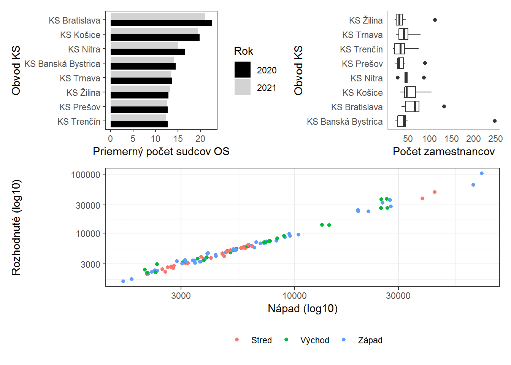
plot1 | (plot2 / plot3)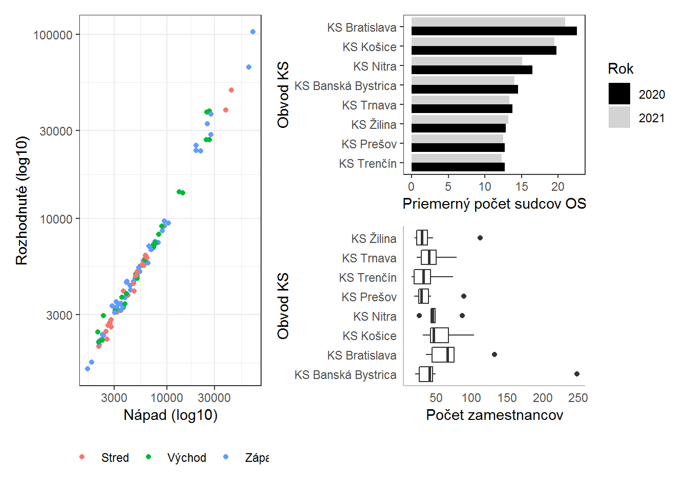